ESSAI SUR L'ART DE LA VERRERIE. PAR LE C. LOYSEL
DEUXIEME PARTIE
revu le 27 juillet 2003
ASSOCIÉ de l'Institut National des Sciences et des Arts, l'un des régisseurs de l'Enregistrement et du Domaine National, PRIX, 5 francs pour Paris, et 6 francs, franc de port, pour les Départements, PARIS. An VIII.
Plan : quatrième partie (suite) [De la soude - lessivage de la soude brute - calcination de l'alkali fixe - comparaison potasse et soude - composition des matières vitrifiables - de la fritte] - Cinquième partie [des substances propres à purifier le verre - du nitre - de l'oxyde de manganèse - de l'oxyde d'arsenic] - Sixième partie [de la fusion des matières vitrifiables - du travail du verre - de la recuisson du verre - des principaux défauts] - Septième partie [fabrication du cristal ou verre blanc] - Huitième partie [pesanteur spécifique du verre - phénomènes présentés par les vitrifications - Applications : 1 - 2 - alkali de la soude fondu - composition du cristal (123) - TABLE VI] - Neuvième partie [des verres colorés - ROUGE : vitres et vases - pierres précieuses - JAUNE : vitres et vases - ANTIMOINE : pierres précieuses - BLEU : v. et v. - p.p. - VERT : v. et v. - p.p. - VIOLET : v. et v. - p.p. - OPALE - BLANC OPAQUE - NOIR] - Notes [I - II - III - IV : problèmes 1, -TABLE IV - 2, sphère - TABLE V - V : sulfate de soude : Dizé - Leblanc - Schée -- Malherbe - Chaptal - Berard - produits en muriates de plomb - VI : problème - solution : 1, 2 - VII : pourpre de Cassius : Montamy - Fontanieu : 1, 2 - VIII : lune cornée -
Préambule suite : Le chapitre 74 porte sur la potasse. Le chapitre 76 traite de la soude et nous sommes donc au coeur de l'étude des fondants. Voici un extrait de Bosc d'Antic sur les supputations de l'époque quant à la valeur relative des différents fondants :La seconde matière principale qui entre dans la composition du verre, ce sont les fondants , les sels alkalis fixes, minéral et artificiel, ou le mélange de sels alkalis fixes et de leur partie cendreuse d'une terre alkaline , de nature saline. Il n'y a peut-être point de partie dans l'art de la verrerie, fur laquelle les auteurs et les maîtres de verrerie soient moins d'accord. Chacun a son fondant favori. Agricola dit que de son temps on donnait la préférence au nitre. Merret assurait que le temps et l'expérience ont fait abandonner l'usage du nitre, comme sel trop tendre et trop faible qui se résout en sel alkali (sel de verre) et que la roquette ou poudre de Syrie, a obtenu le premier rang. Kunckel et Henckel assurent, d'après Merret, que le verre fait avec la soude n'est pas estimé, qu'il casse très facilement en se refroidissant ; qu'il conserve toujours une couleur bleuâtre ; qu'en un mot, la soude, quand même on y mêlerait de la magnésie, ne produit point un beau verre ; et on voit assez que ces auteurs penchent en faveur dé la potasse. Le premier dit même que le cristal qu'il en a fait est supérieur à ceux que Néri avait faits avec tant de peine , et où il avait fait entrer le sel alkali fixe de la soude, de la roquette, le borax, le sel alkali du tartre, le nitre, etc. M. Gellert pense que la soude est plus propre que tout autre sel tiré des cendres, à faire du beau verre durable ; que celui qui est fait avec de la potasse est plus sujet à être attaqué par les acides que les autres, et même qu'il se décompose. Dans les verreries actuelles d'Allemagne, on ne sait employer que la potasse. Dans celles d'Italie et dans celles de France , on ne connaît presque que l'usage de la soude et du salpêtre. Auquel de ces fondants, rejetés par les uns, adoptés par les autres, devons-nous donner la préférence ? A celui qui fera le plus à notre portée, que nous pourrons nous procurer à moins de frais. Je puis assurer, d'après des expériences très variées et très souvent répétées, que tous sont également bons, pourvu que la préparation en soit convenable, les proportions de la composition justes, et la fusion et dépuration suffisantes.(O)Comme on voit, le choix se porte sans différence vers l'alkali de la potasse ou de la soude, sauf le lieu où l'on habite. Les alchimistes semblent aussi avoir choisi indiféremment les deux voies, puisque l'on voit à côté de gravures représentant le blanchiment du linge, d'autres gravures nous présentant des bords de mer. Cyliani, dans son Hermès Dévoilé, paraît s'être placé du côté des partisans de la soude. D'autres en tiennent pour la potasse ou pour l'Arcanum duplicatum.
Les fondants peuvent se trouver en France, pour le moins en aussi grande
abondance, que dans les pays étrangers.Quelque hasardée que paraisse cette assertion , elle n'en est pas moins bien fondée. Nous pouvons faire annuellement une quantité très considérable de potasse rouge et blanche.[La potasse rouge est le sel alkali fixe extrait par lixiviation et évaporation des cendres de tous les végétaux ; excepté la plupart des plantes maritimes. La potasse blanche n'est autre chose que la rouge calcinée à un feu de réverbère. Il se fait une grande quantité de potasse en Alsace, en Lorraine et dans les Ardennes. Dans les chefs-lieux, il y a ordinairement quelqu'un qui l'achète livre à livre des paysans et des bûcherons. La cupidité a introduit un grand nombre de fraudes dans cette branche de commerce. Il est important de faire connaître les principales. Une des plus dangereuses pour les verreries enfin, est de mêler du sel marin avec le sel alkali fixe, ou de vendre pour de la potasse extrait des cendres faites sous les chaudières des salines de sources. Il y a trois moyens également sûrs pour découvrir cette fraude. Cette potasse fond aisément au feu de calcination, ne prend qu'une couleur bleue très-pâle, et ne fait du verre qu'à proportion du sel alkali fixe dont elle est chargée. J'en ai reçu où il y avait plus de moitié de sel marin tiré, je pense, de la saline de Dieuze. [...] On s'est aperçu que les cendres vieilles fournissent une plus grande quantité de sel, que les nouvelles. En conséquence, on les laisse longtemps exposées au grand air, ou on les garde dans des endroits où l'air extérieur a un libre accès. Ces cendres donnent plus de fel par la raison qu'une partie souvent considérable du fel alkali fixe se convertit en tartre vitriolé, sel funeste aux verreries lorsqu'il se trouve en grande proportion dans la potasse. Les uns mêlent de la suie dans la potasse rouge, ce qui donne au verre une couleur jaune très opiniâtre. D'autres (et c'est le plus grand nombre) ne laissent point clarifier leur lessive. Il en résulte que la potasse est plus faible et très difficile à purifier par la calcination du principe colorant grossier, surtout lorsque la lessive est faite, en tout ou en partie, avec les cendres de bois de sapin]
Il y a plusieurs provinces où il se perd immensément de petits bois, ne fussent que les régalis, et où les coupeurs de bois négligent les cendres qu'ils font pendant l'exploitation d'une vente. La fougère est très commune dans le royaume : les cendres de cette plante, coupée vers la fin de juillet, et brûlés comme on brûle la soude, donnent environ un neuvième de fel alkali fixe. On ne fait aucun cas du marc des raisins : ses cendres bien faites produisent au moins autant que celles de la fougère. Des cendres de ce qui reste dans l'alambic des distillateurs d'eau-de-vie de marc, m'ont donné jusqu'à un cinquième de très beau sel alkali fixe ; il est rare que ces distillateurs ne mêlent au marc de la lie liquide. Pour peu qu'on connaisse notre produit en vin, on concevra que nous pourrions tirer annuellement du marc plusieurs millions pesant de très bonne potasse. Il est surprenant qu'on ait négligé jusqu'aujourd'hui un objet aussi utile que facile à saisir. Les cendres des côtes de tabac nous offrent une nouvelle ressource. Elles produisent, lorsqu'elles sont faites avec soin, plus du tiers de leur poids de sel alkali fixe. Il est certain que nous pouvons nous procurer très aisément, et sans le secours de l'étranger, la potasse que nos verreries , nos blanchiseriess et nos savonneries de savon noir sont dans le cas de consommer. Cette branche d'industrie mérite sans doute d'être encouragée. Les maîtres de verreries sont les premiers intéressés à l'animer, et cela leur est facile : il n'ont qu'à exciter à des essais les paysans, à leur donner la certitude de la vente, et à les diriger. Nous leur en fournirons ci-après les moyens. Sans parler des cendres de l'algue marine, connue sous les noms de varech et de goémon, très communes sur nos côtes, nous avons encore une ressource bien plus précieuse ; c'est la soude. On en fait en Provence et en Languedoc, qui, simplement frittée avec le sable, est propre à faire de bon verre. Les essais qu'on a faits en Poitou, donnent les meilleures espérances. Un grand nombre de bonnes espèces de kali, particulièrement le kali majus cochleato semine, croissent naturellement sur les côtes de Provence, du Languedoc et du Roussillon. J'ai de très bonnes raisons de croire qu'on pourrait y cultiver avec succès le kali de Sicile, et les plus estimés d'Espagne, le kali à feuille capillaire velue , le kali à feuille de geneste, et le kali à feuille de tamarisque. Il est plus que probable, que, par une culture et par une incinération convenables de ces plantes, nous nous procurerions très abondamment, et dans des terres incapables de produire autre chose d'utile, des soudes équivalences aux meilleures d'Espagne. Celles qu'on fait du côté de Narbonne, et dans les îles, appelées les Saintes, uniquement avec le kali majus cochleato semine, ne leur cèdent pas de beaucoup en qualité. Elles rendent autant de sel alkali fixe, environ moitié de leur poids, et il n'y a d'autre différence, qu'une très petite quantité de plus de sel marin et de sel admirable de Glauber. La soude ou salicor qu'on fait à Pérols, Villeneuve près de Montpellier, est de beaucoup inférieure à celle des îles les Saintes. Elle ne donne guère plus du tiers de sel alkali fixe, et chargé d'une plus grande quantité de sels neutres, par la raison sans doute qu'on brûle avec le kali majus cochleato semine, le kali majus geniculatum, l'absinthe et le fenouil maritimes, et bien d'autres plantes maritimes. Ne cultivât-on, dans nos provinces méridionales, que le kali majus cochleato semine, la cendre donnât-elle moins de sel alkali fixe, nous pourrions rendre nos soudes équivalentes aux meilleures d'Alicante, même supérieures. Le moyen est simple. Nous n'aurions qu'à arroser les cendres du kali majus cochleato semine, encore rouges dans la fosse, avec une forte lessive des mêmes cendres.
Quoique les états du Languedoc, toujours attentifs au bien de la province, aient déterminé d'encourager la culture des soudes ; quoique cette culture et le moyen d'amélioration que je viens de proposer, soient aussi aisés que lucratifs, peut-être aurons-nous longtemps à attendre des soudes d'une meilleure qualité. II serait très avantageux de pouvoir, en attendant, substituer nos soudes, telles qu'elles sont, aux soudes étrangères : une seule opération nous mettra en état de le faire. Il ne s'agit que d'en extraire le sel alkali fixe, et d'employer ce sel au lieu de la soude en nature. Ce sel, suivant le degré de purification qu'il a reçu, est propre (je puis l'assurer avec confiance) à faire depuis le verre commun blanc, jusqu'au plus beau cristal.
La partie terreuse de toutes les soudes, comme des cendres de tous les végétaux, est exactement de la même nature alkaline ; la matière colorante qui s'y trouve mêlée est précisément la même dans toutes, le phlogistique. Le sel alkali fixe, extrait des cendres de tous les végétaux, sans en excepter aucun, est le même relativement à la verrerie, où il est également propre à faire du verre d'une bonne et belle qualité. [...]mémoires sur l'art de la verrerie, sur la faïencerie, la poterie, l'art des forges, la minéralogie, l'électricité et sur la médecine (1780)
Remerciements : je dois de nombreuses corrections de fautes dans cette page - et la précédente - à M. Marc-Gérald Cibard. Qu'il trouve ici l'expression de ma gratitude.
¯
75. Les sels neutres qui se trouvent mêlés à la potasse ne nuisent pas seulement parce qu'ils en diminuent la proportion, mais principalement
parce que ne pouvant se combiner avec la silice, il peut en rester de mélangés dans la masse du verre, ce qui y forme des corps étrangers opaques. Lorsqu'ils sont en fusion avec le verre, le mouvement occasionné par la violence du feu les répand dans toutes ses parties, et le feu le plus longtemps continué serait à peine suffisant pour les dissiper. Le remède le plus efficace que on ait pu trouver jusqu'à présent, pour s'en débarrasser dans cet état, consiste à diminuer la chaleur du fourneau, quand le temps de la fonte est passé. Les sels neutres spécifiquement plus légers que le verre, s'élèvent à la surface, d'où on les enlève pour travailler le verre. Ils forment ce qu'on appelle le sel ou fiel de verre ; mais cette opération entraîne une perte de temps préjudiciable, et il peut rester du sel de verre dans les ouvrages que l'on fabrique. [ce fiel de verre est d'une importance capitale pour l'alchimiste. Non pas tant pour ce qui concerne sa genèse - il s'agit d'une écume qui se met en place lors de la fusion d'une matière vitreuse, rappelant ce que dit Artéphius dans son Livre Secret - que bien plutôt ce qui concerne sa composition : sel admirable de Glauber, arcanum duplicatum et sel marin. Nous voici réellement à la recherche du LION VERT dont on aperçoit là les premières et véritables traces. Ce fiel de verre, Michel Maier en parle dans le chapitre XXIII de son Atalanta fugiens et Bosc d'Antic, qui fait la liaison entre l'ancienne chimie et Lavoisier, y consacre des pages fort intéressantes, dans ses mémoires sur l'art de la verrerie, sur la faïencerie, la poterie, l'art des forges, la minéralogie, l'électricité et sur la médecine (1780). Voici ce qu'écrit Bosc d'Antic sur le fiel de verre - appelé aussi suin ou sel de verre :« La méthode d'enlever le fiel de verre à la première fonte me paraît mauvaise. Ce sel facilite la fusion et la dépuration de la seconde fonte. J'ai toujours trouvé utile de ne faire la seconde et la troisième fonte, que lorsqu'il ne paraît plus de bulles dans les larmes d'essai. Le verre se dépure beaucoup mieux et plus promptement. Si le sel de verre se trouve abondamment sur la dernière fonte, il est avantageux de l'enlever avec une poche de fer, parce qu'il corrode les creusets. Le fiel de verre est le plus cruel ennemi que le maître de verrerie ait à redouter. Il est la cause des bulles, du point, de l'empetit, du vésinage, de l'engélé, du vergetage, des nuages, des graisses, du laiteux, du feuilletage, de l'humide, du ressuage, du défaut de solidité, de la rouille ou plombé du verre, de la dégradation inégale, quelquefois de la fracture des creusets. Ce serait un très grand bien qu'il n'en restât point dans le verre ; mais il serait, je pense, très fâcheux qu'il n'y en eût pas une petite quantité dans le sel alkali fixe. Il dispose les matières à la fusion, en facilite le parfait mélange, contribue infiniment à la dépuration du verre, entraîne avec lui les matières hétérogènes, surtout le principe colorant grossier. Pour s'en convaincre, on n'a qu'à faire fondre avec du suin le verre qui, par son séjour dans le fond des fourneaux de fusion, est devenu noir et opaque. Par ce moyen, on lui rendra sa transparence et sa couleur naturelle, et on lui enlèvera même la vertu électrique qu'il avait au plus haut degré. On voit par là que l'usage où sont quelques verreries d'ajouter du sel marin aux compositions de verre grossier, n'est point à mépriser. Le sel admirable de Glauber et le tartre vitriolé produiraient les mêmes effets ; et même le dernier mérite la préférence, à raison de sa plus grande fluidité. Voyez p.175 et 176 de l'Examen des pierres de M. Pott. Les savants et les maîtres de verrerie regardant le suin ou fiel de verre, avant l'excellent mémoire de M. Pott, déjàIl s'y trouve ordinairement sous la forme de fleurs blanches assez semblables à des flocons de neige. Ces sortes de verres sont fragiles, surtout quand une partie du sel de verre se trouve à la surface [a noter, donc, que l'on emploie indifféremment l'expression sel de verre pour fiel de verre. Mais le terme fiel n'est pas inconnu à l'hermétiste qui y reconnaît sa Vénus, selon qu'elle se nomme Vesper ou Lucifer.]. Il serait donc important de dépouiller la potasse des sels neutres qui s'y trouvent mêlés. Ceux qui sont le plus communément mélangés avec la potasse, sont le sulfate, le muriate de potasse et le muriate de soude ; ce dernier y est souvent mis par fraude de la part des fabricants. Ces trois espèces sont beaucoup moins solubles dans l'eau que la potasse ; en sorte qu'on peut, par évaporation et la concentration de leur
cité, comme un sel alkali superflu, et ne soupçonnant même pas le plus grand
nombre de ses mauvais effets, ne pouvaient conseiller et employer que deux
moyens pour le détruire, l'extinction du verre dans l'eau et les longs affinages.
Ces moyens sont bons, mais l'expérience prouve qu'ils font insuffisants. L'eau ne peut se charger de tout le sel, qu'autant que le verre serait réduit, par l'extinction, en poussière très fine. L'action du feu, si longtemps continuée qu'elle soit, ne forcera jamais tout le suin à se dissiper, si le verre n'a pas une fluidité convenable. Dans ce cas, le verre retient le fiel de verre, comme les scories trop pâteuses retiennent le métal. La seule différence qu'il y a, c'est que l'un empêche l'évaporation, et les autres la précipitation. Diverses pratiques de verreries, inventées dans d'autres vues, contribuent à la dissipation du fiel de verre. On met de l'arsenic, de l'antimoine, des écorces vertes d'arbres dans le verre en fusion. On le remue avec des bâtons verts de frêne, de coudrier, de tilleul, etc. dans l'idée de le blanchir, de détruire ses couleurs trop fortes. Ces différentes manœuvres n'ont d'effet qu'autant qu'il y a du suin dans le verre. Elles en facilitent le dégagement par le partage que s'ouvrent, à travers le verre, l'arsenic, le papier dont il est enveloppé, 'antimoine, les écorces, les parties aqueuses et l'écorce des bâtons. Le sel de verre suit ces matières, et emporte avec lui le principe colorant grossier. Le pilonnage qu'on fait pour mêler la manganèse avec le verre, produit le même effet. Après ces opérations, le verre du haut des creusets est très bouillonneux, et se trouve charge de moitié plus de suin que celui du milieu ou du fond des creusets. On peut s'en assurer par l'expérience. Ces moyens ne sauraient jamais remplir parfaitement leur objet. On ne doit se flatter de détruire entièrement le sel de verre , qu'autant que la composition aura été faite dans des proportions convenables, et qu'on emploiera un feu très violent et assez longtemps continué ; qu'il y aura, dans la composition, le fel alkali fixe nécessaire pour saturer complètement, s'il est permis de se servir de ce terme, à un feu très violent, le sable et la chaux. La parfaite dépuration se fera alors sans qu'on soit obligé d'avoir recours à aucun autre moyen. Je crois avoir indiqué ci-dessus ces proportions, ou la vraie méthode pour les trouver dans tous les cas. D'après ce que nous venons de dire, on voit ce qu'on doit penser et ce qu'ont écrit les auteurs de l'art de la verrerie sur les couleurs du verre : que le feu les consume ; qu'il faut les prendre pour ainsi dire à la volée ; que les minéraux seuls peuvent les fournir, etc. Les couleurs ne disparaissent que parce que la matière colorante ayant plus d'affinité avec le suin qu'avec le verre, se combine et se dissipe avec lui. Lorsque le verre est exactement purgé des sels neutres, tartre vitriolé, sel marin et sel admirable de Glauber, les couleurs sont fixes au feu le plus violent et le plus longtemps continué. La couleur jaune que donnent la suie, les charbons des végétaux, et des animaux , est aussi fixe que le bleu du saffre & le rouge de la manganèse. Le sel de verre me parait le plus sûr moyen qu'on puisse employer pour amener les couleurs au ton & à la nuance désirée [...]Nous avons cité ce long extrait car il constitue à sa manière, un traité sur le fiel de verre du plus haut intérêt pour l'alchimiste. Même l'étudiant apprenti n'aura pas beaucoup à réfléchir pour ne pas se rendre compte des qualités mercurielle et spirituelle dont paraît doté le suin ou sel de verre. D'abord, il aide à la fusion des matières, c'est-à-dire à leur « fluence ». ensuite, il évacue les soufres grossiers qui se trouvent mêlés à la matière même des substances en fusion. Mieux, il se trouve des adjuvents de ce fiel de verre, comme l'arsenic ou comme l'antimoine - à propos, sait-on que le beurre d'antimoine est aussi appelé la Proserpine de Glauber ? Il y a là une indication - qui permettent au fiel de verre de se frayer littéralement parlant, un chemin vers le Ciel chymique ? Le fiel de verre apparaît comme le Janus du verrier, avec une partie positive que nous venons de décrire et qui est directement en rapport avec les vertus célestes de ce sel composite, c'est-à-dire avec son pouvoir de volatilisation et avec une partie négative, due à sa fixité qui prend le pas sur sa volatilité et qui signe là son ardeur toute tirée d'Arès. Enfin, nous voyons presque sous les yeux, avec cette description de Bosc d'Antic, que le soufre grossier, pâle imitation du vrai soufre rouge, est dissous dans le suin et qu'il est porté à la surface du bain en fusion, de manière tout à fait semblable à celle que nous décrivent les traités qui parlent de la VOIE SECHE. ]
solution commune, obtenir la précipitation de la plupart de ces sels avant celle de la potasse.
Il suffit donc de faire dissoudre dans l'eau la potasse mélangée de ces sels neutres, de faire évaporer jusqu'à un certain point, et de laisser refroidir. On enlèvera les sels précipités, ou bien on décantera la liqueur pour la faire évaporer à siccité, et en retirer la potasse. Ce moyen ne produit point, à la rigueur, une séparation complète des sels neutres ; cependant, lorsque l'opération est bien conduite, il en reste assez peu pour qu'on ne doive pas craindre d'avoir du sel de verre. Cela dépend du degré de concentration de la liqueur avant de la laisser reposer. Pour en juger sans tâtonnement, il faut observer que 100 parties de dissolution de potasse la plus concentrée, contiennent 48 à 50 parties d'alkali. Alors le pèse-liqueur des sels (division du citoyen Baumé) marque 48 à 50 degrés. Si donc on pousse la concentration de la lessive de potasse du commerce jusqu'à 40 degrés environ, la plupart des sels qui ne sont pas plus solubles dans l'eau chaude que dans l'eau froide seront déjà précipités. Le refroidissement produira le même effet sur ceux qui sont plus solubles dans l'eau chaude que dans l'eau froide. Il ne s'en trouvera dans la liqueur restante, que ce qu'une lessive alkaline aussi concentrée peut en dissoudre, et cette quantité ne produit point un effet sensible dans la vitrification. Cette méthode n'augmentera même que très peu la dépense du maître de verrerie, obligé, le plus souvent, de dissoudre la potasse du commerce, pour en séparer la terre et les cendres que les fabricants y ont introduits par fraude ou par négligence. Enfin, la calcination mettra le complément à la perfection de la potasse, en brûlant le reste des charbons et des matières extractives qu'elle pouvait contenir. La potasse nous vient des contrées septentrionales de l'Europe et de l'Amérique , où l'abondance des bois y en a permis la fabrication. C'est le fondant de presque toutes nos verreries du Nord, parce qu'elle y est à meilleur marché que la soude qui nous vient du Midi.76. La soude brute du commerce est le produit de la combustion de diverses espèces de kalis cultivés sur les côtes de la Méditerranée,
en Espagne, en France, en Sicile, en Syrie. On fait aussi une espèce de soude de qualité inférieure aux précédentes, sur nos côtes de l'Océan, par la combustion des plantes que l'on recueille sur le rivage. Elle est connue sous le nom de Varech. Les soudes les plus estimées sont celles qui se fabriquent en Espagne, dans les environs d'Alicante. Le sel qu'on en extrait est presqu'en totalité de la soude pure, semblable à la base du sel marin. Enfin, le commerce s'est enrichi d'une nouvelle fabrication artificielle de soude, par divers procédés récemment publiés pour la décomposition du sel marin. (Note V) [cf. bain des astres -]
Ces diverses espèces de soude sont en masses dures et très compactes. C'est un mélange de sels solubles dans l'eau, de terre, de charbon,
quelquefois d'un peu d'oxydes métalliques, non solubles. Ces substances se sont pénétrées dans la fabrication de la soude brute, par la fusion des sels. Pour extraire les sels de la soude brute, il suffit de la lessiver dans une suffisante quantité d'eau qui se charge de sel ; on fait ensuite évaporer l'eau, et l'on obtient les sels au fonds des vases d'évaporation ; on les dessèche ensuite en les exposant au feu de réverbère dans un four de calcination. Ces différentes opérations doivent être exécutées de manière à extraire la plus grande quantité possible de sel dans le temps le plus court, et avec le plus d'économie. On commence par briser à la main, avec des marteaux de fer, les masses de soudes pour les réduire en morceaux, qui n'excèdent pas 7 à 8 centimètres de grosseur. Ces morceaux sont mis dans un tordoir pour y être pulvérisés. La soude brute, réduite en poussière, est passée dans des tamis à toiles de crin, de fil de fer ou de laiton, et d'un tissu égal à ceux de crin dont les boulangers se servent. Les grugeons qui restent sur la toile sont repassés an tordoir pour y être broyés de nouveau, en les mêlant avec de la soude en morceaux. Ce mélange facilite le broiement des grugeons, dont la figure déjà arrondie, les ferait échapper à l'action des piles ou de la meule des tordoirs, si on les y repassait seuls.77. Cette opération s'exécute en tenant continuellement les molécules de la soude en contact avec l'eau, afin que celle-ci se charge plus facilement des sels qu'elle est destinée à dissoudre. La méthode que nous avons décrite pour les cendres ordinaires, et qui consiste à passer plusieurs eaux dessus, dans des cuviers, sans remuer les cendres, serait insuffisante pour la soude ; mais celle que nous allons décrire, est aussi applicable aux cendres. L'eau pénètre facilement dans une masse de cendres légères, spongieuses, peu chargées de sel ; elle enveloppe chaque molécule, et se charge du sel qui y est contenu : mais les molécules de la soude brute, plus pesante que les cendres, à raison de la grande quantité de sel dont elle est chargée, s'affaissent et forment promptement, au fond des vases, une masse compacte, dans l'intérieur de laquelle l'eau ne pénètre qu'avec beaucoup de lenteur. Pour éviter cet inconvénient, on agite continuellement la soude brute, afin d'en tenir les molécules suspendues dans l'eau, et en contact de toutes parts avec elle.
Imaginons deux équipages de bassins en plomb (fig.1) : chaque bassin ayant cinq mètres de longueur, 1,3 m de largeur et 0,4 m de profondeur ; le premier équipage composé des bassins 1, 2, 3, 4 ; le second composé des bassins 5, 6, 7, 8: ces deux équipages suffisent au lessivage de 1600 kilogrammes de soude par jour, et la soude est étendue dans 4 fois son poids d'eau. La soude dans l'équipage 1, 2, 3, 4, est d'abord lessivée dans le bassin 1 ; la même soude est ensuite lessivée successivement dans les bassins 2, 3 et 4.
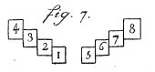
FIGURE IL'eau qui sert à lessiver cette soude, est d'abord mise dans le bassin 4 ; elle passe ensuite successivement sur la soude dans les bassins 3, 2 et 1, et de ce dernier dans un vaste dépôt ou réservoir. Par ce moyen, la lessive descend successivement dans les bassins par des ouvertures ou champelures pratiquées à environ 0,1 m de hauteur au-dessus du fond de chaque bassin, ou avec des siphons, et l'on fait remonter la soude en la transvasant avec des pelles de bois ou écloppes.
La même chose a lieu pour l'équipage 5, 6, 7, 8 ; mais dans l'ensemble de l'opération, le travail se fait alternativement, en passant d'un équipage à l'autre, de la manière suivante : Je suppose, par exemple, un assemblage de 400 kilogrammes de soude neuve dans le bassin 1, où l'on aura fait couler la lessive du bassin a ; on agitera continuellement cette soude dans la lessive, pendant une heure et demie, ce que l'on appelle touiller la soude. On fera ensuite la même opération et pendant une demi heure dans le bassin 6 , avec la soude provenant du bassin 5 et la lessive du bassin 7 ; on passera ensuite au bassin 3, où l'on touillera la soude du bassin 2 avec la lessive provenant du bassin 4. Viendra ensuite le touillage dans le bassin 8 avec la soude du bassin 7 et 1600 kilogrammes d'eau neuve provenant d'un réservoir. Du bassin 8 on passe au bassin 5 avec 400 kilogrammes de soude neuve et la lessive du bassin 6. Vient ensuite le touillage dans le bassin 2 avec la soude du bassin 1 et la lessive du bassin 3 ; enfin, le touillage dans le bassin 4 avec la soude du bassin 3 et 1600 kilogrammes d'eau neuve. On recommence ensuite par le bassin 1 avec 400 kilogrammes de soude neuve, et ainsi successivement comme ci-dessus. Le tableau suivant présente la suite de ces opérations.
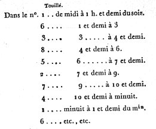
FIGURE IIUne heure ou une heure et demie avant le touillage et avant de mettre la soude, on échauffe les eaux des bassins 1, 5, 4, 8 ; on le fait :
- 1°. afin que celles des bassins 1 et 5, qui doivent passer sur de la soude neuve, soient aussi fortes qu'il est possible, avant de les faire couler dans les réservoirs 1 ;
- 2°. Afin que les eaux neuves des bassins 4 et 8 ne laissent que le moins possible de sel dans le dernier marc de soude, avant de le jeter dans des fosses hors de râtelier. On cesse le feu avant de jeter la soude dans la lessive ou l'eau neuve.A son entrée dans le réservoir, la lessive est reçue dans un panier d'osier garni de toile, afin d'arrêter le marc de soude qui peut se trouver suspendu dans la lessive. Les réservoirs sont des carrés longs, traversés de distance en distance par des diaphragmes, avec une échancrure de 0,1 m carré à la partie supérieure pour le passage de la lessive d'une case à la suivante. Par ce moyen, la lessive passe doucement dans les différentes cases des réservoirs et les corps non solubles ont le temps de se déposer, avant d'arriver aux chaudières d'évaporation. Il est avantageux d'avoir des réservoirs aussi étendus que l'atelier peut le permettre, et qui présentent une grande surface au contact de l'air : la lessive y devient un peu plus concentrée, et ce qui est plus important, l'alkali qui aurait échappé à sa neutralisation par l'acide carbonique, soit dans le magasin des soudes pilées, soit dans les bassins de touillage, en attire une nouvelle quantité qui fait précipiter le charbon et les oxydes métalliques qu'il pourrait tenir en dissolution par sa causticité. C'est ainsi que la lessive peut arriver limpide aux chaudières d'évaporation. Elle passe d'abord dans des chaudières qui sont à la suite de celles où se fait la réduction. On les nomme préparantes. Ces chaudières étant éloignées du foyer des réduisantes, la lessive y acquiert un nouveau degré de concentration, mais n'y est jamais bouillante. Des préparantes on la fait passer dans les réduisantes où on l'entretient en ébullition. A mesure que le sel tombe au fond, on l'enlève avec des écumoires de fer ; on le laisse égoutter : dans cet état, il est propre à être calciné. Si la lessive n'était pas limpide en arrivant aux réduisantes, il se ferait peu à peu un précipité qui s'attache fortement au fond des chaudières, empêche le contact de l'eau et ne tarde pas à les faire fondre. Tous les bassins, les réservoirs et les chaudières doivent être en plomb et non pas en fer. Ce dernier métal s'oxyde trop promptement et colore le verre.
78. La température de la lessive des bassins 1 et 5, quand on éteint le feu pour mettre la soude, est de 35 à 40 degrés. (Division de Réaumur). Celle des bassins 4 et 8, de 50 à 60 degrés. Celle des préparantes, de 45 à 50 degrés. Enfin, celle des réduisantes, bouillante et chargée de toute la soude qu'elle peut tenir en dissolution, de 97 degrés.
79. Lorsqu'on emploie des soudes d'Alicante de première qualité, la force des différentes lessives, mesurée à l'aréomètre des sels du citoyen Baumé est la suivante :
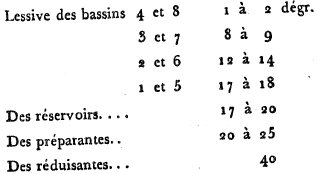
FIGURE IIIToutes ces quantités peuvent varier suivant le plus ou moins d'exactitude dans le cours des opérations ; mais lorsque les différents touillages ont été faits avec exactitude, la lessive des bassins 4 et 8 marque à peine un demi-degré. Toute espèce de combustible, houille, tourbe, bois de corde, fagots, copeaux, peut servir à échauffer les bassins et les chaudières. Il n'y a d'exception que pour la calcination du sel, qui exige un feu clair et sans fumée. On y emploie du bois de corde.
80. La calcination est une préparation importante des matières vitrifiables. Ses principaux effets sont la séparation des substances volatiles qui ne doivent pas devenir parties constituantes du verre, et la combustion des substances charbonneuses, qui, sans cette précaution, colorent toujours le verre : cette opération est surtout nécessaire pour l'alkali.
Nous avons fait remarquer précédemment l'avantage qu'il y avait à neutraliser l'alkali par l'acide carbonique, pour le débarrasser des substances qu'il tient en dissolution, et avec lesquelles il est combiné. Lorsqu'on est parvenu à opérer ce dégagement, il convient de le déposer de nouveau à subir les combinaisons que l'on désire ; c'est-à-dire, de le ramener à son état de pureté et privé d'acide carbonique, condition essentielle pour sa combinaison avec la silice et la chaux. La calcination est le premier moyen à employer pour y parvenir. Au sortir des chaudières, l'alkali quoiqu'égoûté, retient toujours beaucoup d'humidité, indépendamment de l'eau de cristallisation. On commence par retendre 1 dans un four à réverbère, à une chaleur modérée pour éviter la fusion acqueuse. Là, il se dessèche peu à peu. A mesure que l'humidité disparaît, on augmente le feu jusqu'à faire rougir le sel, sans le mettre en fusion ; on le remue souvent afin d'en faire parvenir toutes les parties au contact de l'air, et par là on achève de brûler les parties
combustibles qu'il aurait pu conserver. On parvient ainsi à l'obtenir sec et blanc. Dans cette opération, il n y en a qu'une légère portion qui perd son acide carbonique, et alors on peut le conserver dans un lieu sec pour s'en servir au besoin. [cette opération ressemble fort à celle que les Adeptes professent lorsqu'ils parlent d'abord de l'oeuvre au blanc - qui affirme la pureté de l'alkali - et ensuite avec le fait de ne pas « brûler les fleurs » qui serait, dans le cas présent, de mettre le sel en fusion, chose à éviter.]La soude d'Alicante brute, de première qualité, fournit ordinairement 45 et même 50 pour cent de sel calciné. Lorsqu'on a pris les précautions de faire aérer complètement la soude pilée et les lessives, l'alkali est blanc. Le verre qu'il produit est également blanc comme si l'on eût employé cet alkali obtenu des cristaux de soude ou de la potasse extraite du tartre ; mais si l'on néglige cette précaution, le verre est toujours un peu coloré, le plus souvent en jaune. Cet effet est assez généralement produit par l'oxyde de fer provenant des terres des fosses où l'on a brûlé les plantes, et des outils avec lesquels les cendres en fusion ont été brassées. Le manganèse [le savon des verriers] que l'on ajoute pour purifier le verre peut bien le blanchir lorsque la couleur jaune est l'effet de matières charbonneuses, mais non pas lorsque cette couleur provient d'un oxyde métallique. Dans ce dernier cas, le seul remède connu est d'ajouter de l'oxyde de cobalt ou du verre déjà coloré en bleu par cet oxyde. Ces deux couleurs réunies en produisent une mixte d'un vert léger. Le défaut de précautions prises pour obtenir une soude dégagée de tout oxyde métallique est cause que la plupart des artistes préfèrent la
potasse pour la fabrication de la gobeleterie, des verres blancs en général et des cristaux. Ce que nous avons exposé jusqu'ici suffit pour éviter les inconvénients qu'on a reprochés à la soude ; il est d'autant plus important d'y faire attention que la potasse devient de plus en plus rare, et qu'on peut la remplacer, avec avantage, par la soude, dans l'art de la verrerie.Comparaison entre la potasse et la soude.
81. On a longtemps cru qu'on ne pouvait pas faire cristalliser la potasse. On sait aujourd'hui qu'une dissolution de potasse que l'on charge d'acide carbonique, ou bien que de l'eau saturée d'acide carbonique dans laquelle on fait dissoudre la potasse, fournit de très beaux cristaux par une évaporation spontanée à l'air : ces cristaux ne sont ni déliquescents ni efflorescents ; ils conservent leur transparence.
Suivant Bergmann, 100 parties de ces cristaux en contiennent 48 de potasse, 20 d'acide carbonique, et 32 d'eau. Ainsi, 100 parties de carbonate de potasse, privée d'eau de cristallisation en contiennent 70 de potasse pure, et 30 d'acide carbonique. Une chaleur assez modérée peut priver le carbonate de potasse de son eau de cristallisation ; mais le feu de la calcination la plus longue et la plus opiniâtre peut à peine la priver de tout l'acide carbonique ; en sorte que la potasse calcinée fait presque toujours effervescence avec les
acides. Communément 100 parties de potasse calcinée en contiennent 75 à 80 de potasse pure ; le surplus est de l'acide carbonique qui n'a pu être dissipé, et un peu de silice combinée avec la partie caustique de l'alkali.
Dans le temps des fontes pour la vitrification, la potasse fait aussi effervescence, tant par la perte de son acide que par sa combinaison avec la silice. Le verre qui en résulte, lorsqu'il est bien fait, est parfaitement sans couleur, net et solide. Il a tout l'éclat du cristal de roche, sans en avoir la dureté. L'humidité s'y attache plus facilement qu'au verre fait avec la soude.82. L'alkali fixe, extrait des cendres de soude, retient communément assez d'acide carbonique pour qu'on puisse le faire cristalliser, sans qu'il soit besoin d'employer les moyens que nous avons indiqués pour la potasse. Ses cristaux ne sont pas déliquescents. Exposés à l'air, ils s'y effleurissent même et perdent presque toute leur eau de cristallisation. 100 parties de ces cristaux en contiennent, suivant Bergmann, 20 de soude pure, 16 d'acide carbonique et 64 d'eau, en sorte que 100 parties de carbonate de soude, privée d'eau de cristallisation, en contiennent 55 de soude pure et 45 d'acide carbonique. Assez communément 100 parties de sel de soude calciné, en contiennent 80 à 90 de soude pure. Le surplus est de l'acide carbonique et un peu de silice. On voit par là que la soude calcinée contient moins d'acide carbonique que la potasse. Au reste, la quantité d'alkali pur, contenue dans 100 parties de potasse ou de soude calcinées, varie suivant le degré de calcination. Les doses de sel calciné à employer dans les compositions de matières vitrifiables, doivent donc varier de même. Voilà pourqnoi, en partie, les compositions ou mélanges de matières vitrifiables sont si différents dans les diverses manufactures, à raison du plus ou moins d'acide carbonique, contenu dans l'alkali qui ne s'emploie souvent que plusieurs mois après avoir été calciné. On ne remarque pas de différence sensible entre la force de la potasse et celle de la soude pour dissoudre la silice dans la vitrification ; mais le verre fait avec la soude, attire moins l'humidité que celui où il entre de la potasse.
83. Avant de donner les doses de quelques mélanges propres à la fabrication des verres de diverses qualités, il est bon de rappeler le principe qui doit diriger dans cette détermination. Ce n'est qu'à raison de la quantité de potasse ou de soude pure, contenues dans le sel que l'on emploie, que ce sel dissout le sable pour produire le verre. Ainsi les doses doivent varier suivant que l'alkali retient plus ou moins d'humidité et d'acide carbonique. Dans les mélanges pour les travaux en grand, à une température de dix à douze mille degrés au lieu d'employer 50 parties d'alkali sur 100 de sable, comme dans les essais en petit, on n'emploie communément que 45 a 48 parties du même alkali ; et si l'on fait attention que cet alkali calciné retient encore souvent 10 a 11 pour 100 d'acide carbonique, on verra que, dans les travaux en grand, il suffit de faire un mélange de 40 parties d'alkali pur avec 100 de quartz pour parvenir à une bonne vitrification.
Nous avons donné (article 74) le moyen de s'assurer, par comparaison, de la quantité d'alkali libre, contenue dans la potasse ou la soude que l'on emploie ; mais pour opérer avec toute l'exactitude convenable, il faut connaître la quantité d'acide carbonique que contenait soit l'alkali du tartre, soit l'alkali de la soude qui servent d'étalons ou de termes de comparaison. Pour cela, il suffit de faire dissoudre 100 parties de l'alkali étalon dans un poids exactement connu soit d'acide muriatique ou nitrique ou sulfurique. La différence entre le poids de la dissolution et la somme des poids primitivement employés, indiquera la quantité d'acide carbonique dégagée et, par conséquent, combien 100 parties de l'alkali étalon en contenaient. Appliquant ensuite la méthode de comparaison de l'art. 74, on saura la quantité d'alkali pur contenu dans le sel dont on veut faire usage.84. La même méthode est applicable à la détermination de la quantité d'alkali contenue dans 100 parties de cendres ordinaires ou de soude
brute. Je suppose que l'on mette en digestion, dans un matras, 100 parties, soit de soude brute réduite en poudre impalpable, soit de cendres, avec sept ou huit fois leur poids d'eau. Qu'on tienne le tout en digestion pendant quatre ou cinq heures, et qu'on finisse par faire bouillir le mélange, en l'agitant souvent. Connaissant le poids primitif du matras, celui de la cendre, enfin le poids total du matras et du mélange après la digestion, on connaîtra la quantité d'eau contenue dans le matras. Une portion de cette lessive d'un poids déterminé et filtrée, éprouvée par la méthode 74, fera connaître la quantité d'alkali qu'elle contient, et, à proportion, combien il s'en trouve dans la totalité de l'eau du matras, ou dans les 100 parties de soudes ou de cendres.
Cette méthode peut être d'une application fréquente, non seulement pour les compositions de matières vitrifiables, mais encore pour ne pas se tromper sur la qualité et le prix des cendres et des soudes du commerce que l'on se propose d'acheter.Ces principes suffisent pour déterminer, dans chaque cas, les doses de matières vitrifiables à employer. Ils font voir combien il peut y avoir
de variations dans ces compositions ou mélanges, à raison de la différente qualité des matières premières. Nous allons cependant donner plusieurs exemples d'après les travaux de quelques fabriques.Compositions de matières vitrifiables.
85. Les matières premières, essentielles à la fabrication des verres blancs ordinaires ou légers sont le sable le plus blanc, de la nature du quartz, la chaux et l'alkali fixe. Les autres substances ne s'emploient que pour purifier le verre ou pour le décolorer. Ces dernières sont inutiles lorsque les trois premières sont bien préparées. Quant aux autres verres, on y fait entrer la terre même des cendres au lieu de chaux, du sable commun, quelquefois de l'argile, comme pour certains verres à bouteilles. [c'est ici que divergent l'Art de la Verrerie et l'Art Sacré. Le verre est, au vrai, une Pierre où se distingue une surabondance en lien du Mercure - le sel d'Ammon - et en éléments purement mercuriels. On y relève aussi l'agent de Justice, c'est-à-dire la chaux dans la personne de Thémis qui d'un côté tient la Balance - l'oxydo-réduction - et de l'autre le glaive de feu. ]
A toutes ces compositions, on ajoute à volonté une quantité plus ou moins grande de débris de verre, de même espèce que ceux auxquels la composition est destinée.
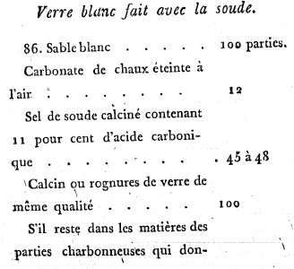
FIGURE IV
(§ 86)S'il reste dans les matières des parties charbonneuses qui donnent au verre une teinte pâle tirant au jaune, on ajoute oxyde de manganèse...0,25. La composition précédente est celle de la manufacture des glaces de Saint-Gobain. Les doses seraient les mêmes, si, au lieu de soude, on employait de la potasse qui ne contient que la même quantité, environ, d'acide carbonique.
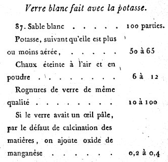
FIGURE V
(§ 87)Si le verre avait un œil pâle, par le défaut de calcination des matières, on ajoute oxyde de manganèse...0,2 à 0,4. Cette composition est assez d'usage pour la gobeleterie blanche, dans beaucoup de verreries.
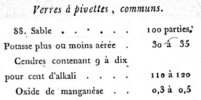
FIGURE VI
(§ 88)Cette composition peut être employée pour des verres à bière communs, des phioles à médecine, etc.
- Glaces communes propres à faire des plateaux d'électricité, des portières de voitures , de la gobeleterie demi-blanche, etc.
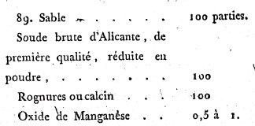
FIGURE VII
(§ 89)Le sable et la soude étant bien mélangés, doivent ensuite être calcinés. On en fait un approvisionnement suffisant que l'on met en magasin, et lorsqu'on en veut faire usage, on ajoute le manganèse et l'on calcine une deuxième fois ; enfin, on ajoute les rognures à volonté.
- Verre en sables façon de Bohême, propre aux grands carreaux de croisées, à couvrir des estampes, aux portières de voiture, etc.
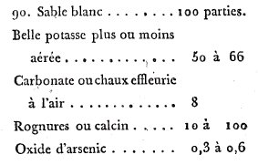
FIGURE VIII
(§ 90)Si l'on calcinait le mélange, on ne le ferait que sur celui des trois premières matières. On ajouterait ensuite l'arsenic et les rognures ; mais le plus souvent on ne calcine point le mélange.
- Verre à vitre, commun, fabriqué en manchons, propre pour des carreaux de moyenne grandeur.
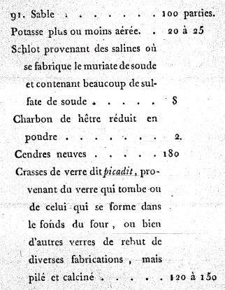
FIGURE IX
(§ 91)Cette composition peut varier considérablement. Ce genre de fabrication est surtout avantageux dans une manufacture où l'on fait plusieurs espèces de verres. Tous les verres et matières de rebut sont convertis en verres à vitres.
- Verre à vitres commun, fabriqué soit en manchons, soit en bondine avec la soude de Varech des Côtes maritimes de l'Ouest, telle que celle de Fécamp.
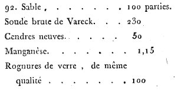
FIGURE X
(§ 92)- Verre à bouteilles, fabriqué avec de la soude de Varech.
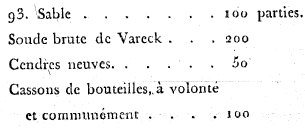
FIGURE XI
(§ 93)Les deux compositions précédentes donnent du sel ou fiel de verre que l'on a soin d'enlever avant le travail. [retenons donc ici les § 92 et § 93]
- Verre à bouteilles dans la composition duquel il entre des charrées ou terrés provenant du lessivage soit de la soude, soit des cendres ordinaires, de l'argile commune ou terre propre à fabriquer des briques.
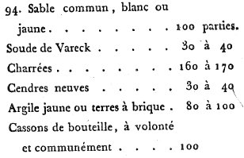
FIGURE XII
(§ 94)Cette composition ne donne point de sel de verre.
95. Nous aurions pu étendre ce tableau de compositions, et y en ajouter dans lesquelles on peut faire entrer des produits volcaniques, tels que des laves, du basalte, substances très fusibles par elles-mêmes, et qui ont déjà été converties en verre par l'action du feu des volcans. Un artiste intelligent saura toujours en tirer parti par un mélange convenable avec d'autres matières premières. [il y aurait intérêt à lire ce que dit Elie de Beaumont au sujet des émanations Volcaniques. Voyez le Mercure de nature.]
96. L'opération de la fritte n'est pas seulement une seconde calcination pour dissiper l'humidité du sable lavé et brûler les substances combustibles qui auraient pu échapper, s'il a eu besoin de calcination, enlever l'humidité et une partie de l'acide carbonique, que l'alkali fixe et la chaux ont attirés de l'atmosphère dans le magasin depuis leur calcination ; cette opération a encore pour but de faire subir à ces matières un commencement de combinaison qui doit s'achever par la vitrification. [cette fritte s'apparente d'assez près aux expériences de dévitrification du verre, réalisées par Réaumur, cf. réincrudation.]
Lorsqu'on fait un mélange d'alkali concret et de sable, et qu'on lui fait subir immédiatement le feu nécessaire à la vitrification, l'alkali entre promptement en fusion. Le sable, plus pesant que cet alkali fluide, tombe au fond du creuset, l'alkali surnage, il s'évapore en partie avant que la dissolution de tout le sable soit opérée. Alors il peut rester dans le verre, du sable non vitrifié, quoiqu'on ait employé une dose d'alkali suffisante ou même surabondante. Cet inconvénient n'est que trop ordinaire dans les verreries où l'on ne fait pas usage de la fritte ; mais on l'évite en faisant contracter un commencement d'union au sable, à la chaux et à l'alkali. On les empêche, par ce moyen, de se séparer par le feu de la vitrification avant qu'elle soit achevée. [autrement dit, c'est un moyen de fixer le volatil ; voyez Blasons alchimiques.]
Plusieurs oxydes métalliques fixes, ou qui ne se subliment point par l'action du feu, et que l'on fait entrer dans la composition du verre, soit pour lui donner plus de pesanteur et de réfringence, comme les oxydes de plomb et de bismuth, soit pour le purifier et anéantir la couleur jaune des matières charbonneuses, comme l'oxyde de manganèse, soit pour y porter des couleurs comme les oxydes de manganèse et de cobalt, s'ajoutent aux compositions avant l'opération de la fritte. Autrement ces oxydes, très fusibles par eux-mêmes au feu de verrerie, donnent promptement un verre liquide qui, par son excès de pesanteur sur les autres matières, tombe au fond des creusets avant d'avoir pu se combiner avec la silice et l'alkali. On ne remédie à cet inconvénient qu'en brassant souvent le verre des creusets. [là encore, l'intérêt du tour de main est important. Car la préparation de la Pierre exige qu'au moins deux oxydes soient infusés au « verre liquide », cette expression étant là impropre, dans le contexte de l'Art sacré.] On risque d'y porter une nouvelle couleur avec la rouille des outils de fer ou de cuivre dont on se sert pour cette manœuvre. Les autres oxydes métalliques ne s'ajoutent ordinairement qu'après l'opération de la fritte et au moment d'enfourner les matières ; telles sont les oxydes d'or et d'argent employés à colorer le verre, mais dont on craindrait la réduction dans l'opération de la fritte par la négligence ou l'inaction à entretenir une flamme pure ; les oxydes de cuivre et de fer dont la nuance de couleur, portée dans le verre, dépend de leur degré d'oxydation , les oxydes d'antimoine, de zinc et d'arsenic, à raison de leur plus ou moins de volatilité. Les matières vitrifiables, nouvellement frittées, détruisent et corrodent moins les creusets que celles qui ne l'ont pas été :- 1°. parce qu'elles sont exemptes d'humidité ;
- 2°. parce que l'alkali n'y est plus dans un état de liberté. [autre relation à méditer sur l'allégorie du fixe et du volatil.]Le feu de la fritte doit être ménagé par degrés, d'abord pour dissiper l'humidité, ensuite pour dégager une partie de l'acide carbonique, enfin,
pour opérer de l'union entre les matières vitrifiables par un commencement de fusion de l'alkali. Dans tous les cas, la flamme doit être exempte de fuliginosités, et la manœuvre est la même que pour la calcination, en remuant et retournant successivement les matières, si la fabrication est en verres blancs ou demi-blancs, en cristaux ou en verres fins colorés. [l'allégorie du Déluge et du retournement des pôles est ici matière à réflexion. il est évident que les dessins d'ammonites, dans un sol sédimentaire et calcaire, constituent une piste sérieuse.] La pureté de la flamme est inutile pour les verres à bouteilles dont nous avons donné la composition. L'opération de la fritte s'exécute dans un ou plusieurs fourneaux adjacents au four de fusion qui communiquent avec lui, et connus sous le nom d'arches, ou bien dans des fours particuliers. Les arches sont préférables :- 1°. Dans les verreries alimentées en bois, où la flamme a le degré de pureté nécessaire en parvenant à l'arche ;
- 2°. dans les verreries à bouteilles, alimentées soit avec du bois, soit avec de la houille.Dans ces deux cas , elles procurent une économie de combustible, et les matières vitrifiables peuvent passer immédiatement dans le four, toutes blanches de chaleur, ce qui fait que la vitrification est plus prompte et les creusets moins sujets à être détruits que si l'on y mettait des matières froides. Les fours à frittes particuliers sont au contraire avantageux dans les verreries à cristaux dont les fours de fusion sont alimentés en houille et où la vitrification se fait dans des pots couverts, afin d'éviter la fumée qu'occasionne la houille.
Des substances propres à purifier le verre.
97. Quelque précaution que l'on prenne pour la préparation et la conservation des matières premières qui entrent dans la composition du verre blanc, il peut cependant arriver qu'elles ne soient pas amenées au plus grand degré de pureté, et qu'elles portent des principes colorants dans le verre. Cet inconvénient arrive, le plus souvent, par le défaut de calcination, en laissant dans les matières des substances charbonneuses qui colorent le verre en jaune. Pour éviter de recommencer la dissolution de l'alkali dans l'eau, sa calcination, ainsi que celles du sable et de la chaux, et leurs préparations subséquentes, si l'on s'aperçoit que le verre ait une teinte pâle ou même légèrement jaune, on a recours à quelques substances propres à opérer cette combustion dans la masse du verre, qui y portent de l'oxygène, et dont le résultat soit un verre blanc. On se sert ordinairement pour y parvenir du nitre, du manganèse, et de l'arsenic.
98. Le nitre sert à la fois comme fondant par sa base alkaline et comme propre à blanchir le verre par son acide. 100 parties de nitre en contiennent 63 d'alkali pur, suivant Kirvan. L'emploi que l'on en fait ajoute donc dans cette proportion, de nouvel alkali à celui de la composition, et permet de diminuer la dose de ce dernier. Le nitre se décompose par l'action du charbon ; son alkali devient libre ; son acide se décompose également par la combinaison de l'oxygène avec le carbone, se convertit ainsi en acide carbonique et en azote, qui disparaissent par l'action du feu. On voit par là que dans tous les cas semblables, le nitre n'est employé que pour suppléer au défaut de calcination du sable, de la chaux, et principalement de l'alkali. Aussi ne s'en sert-on que rarement dans les compositions de verres blancs légers, dont la modicité du prix ne répondrait pas à la dépense d'une substance aussi chère. Son usage est réservé pour la fabrication des verres d'un plus haut prix, tels que les cristaux, les verres de couleur, quelquefois les verres en tables. [on mesure bien l'importance de ce nitre « vulgaire » lors des opérations philosophiques, puisque les verres de couleur ne sont, après tout, que les parents très éloignés de la Pierre.]
99. L'oxydation des métaux est une condition essentielle pour se combiner avec la silice et l'alkali, et se convertir en verre. L'oxyde de plomb est surtout employé dans la composition du cristal, tant à cause de la modicité de son prix, que parce qu'on peut l'y faire entrer en grande dose, sans diminuer la blancheur du verre. Le nitre est d'un usage très utile dans ces sortes de mélanges, non seulement pour empêcher la réduction de l'oxyde, mais encore pour achever d'oxyder les parties qui ne le seraient pas suffisamment. [dans les opérations alchimiques, on peut aussi introduire les chaux sous une forme sulfureuse. La conversion ultérieure des sulfures ou des sulfates, plutôt, en oxydes qui cristallisent explique l'allégorie de la chute de l'Ange et de l'incarnation de l'Âme. Voyez Ripley là-dessus]
Si l'on a pour objet de colorer le verre par quelqu'oxyde métallique, indépendamment de l'effet précédent occasionné par le nitre, il produit encore celui de rehausser la vivacité des couleurs qui dépendent souvent du degré d'oxydation, comme on le remarque dans les diverses nuances produites avec les oxydes de fer, de cuivre, de manganèse, d'argent et d'or. [il ne semble pas y avoir de relation entre les degrés d'oxydation, inconnus des anciens chimistes et les trois couronnes dont parlent les textes, en particulier mises en valeur par Limojon de Saint-Didier au frontispice de son Triomphe Hermétique.]100. Son emploi est encore utile avec l'oxyde d'arsenic, lorsqu'on a pour objet de le fixer et de le faire rester dans la combinaison du verre. Son effet est de suroxyder l'arsenic, de le faire passer à l'état d'acide concret et fixe. Dans cet état, si l'arsenic est employé en dose convenable, la blancheur du verre n'est point altérée ; mais si la dose était trop forte, la dissolution ne serait plus complète par les autres matières vitrifiables, la transparence serait troublée, le verre pourrait devenir laiteux et passer jusqu'à l'opacité.
101. L'oxyde de manganèse est reconnu depuis longtemps pour avoir la propriété de blanchir le verre. On en fait usage dans presque toutes les verreries en verre blanc, où il est regardé comme le savon du verre. Cependant, il ne produit la destruction des couleurs que dans certains cas particuliers ; dans d'autres, il en porte lui-même une violette très vive. Les travaux des chimistes modernes et notamment de Scheele et de Bergmann, nous mettent aujourd'hui en état d'en apprécier les effets, suivant ses diverses applications. [Pierre Berthier pensait que la couleur primitive de l'or est le violet. rappelons que Fulcanelli et E. Canseliet n'ont eu de cesse d'insister sur le vert et le violet. C'en est au point que certains chercheurs ont cru trouver l'identité de Fulcanelli grâce à la couleur violette. Nous ne sommes pas sûrs qu'ils aient eu raison...]
L'oxyde de manganèse pur donne un verre d'un violet foncé, dont l'intensité est si forte qu'il peut paraître entièrement noir s'il est un peu épais ; mais si l'on ajoute du charbon, l'oxyde abandonne une partie de son oxygène et se convertit en verre plus ou moins blanc, suivant la quantité d'oxygène qu'il a perdue. De là vient l'utilité du manganèse, pour détruire, par la combustion, les parties charbonneuses qui peuvent rester dans le verre. Onvoit qu'employé en doses convenables, il peut être substitué au nitre pour fournir l'oxygène nécessaire à la combustion de ces substances, enveloppées dans les matières vitrifiables, ou même dans le verre en fusion. Il en est de même lorsqu'on ajoute de l'oxyde d'arsenic à celui de manganèse. L'arsenic se suroxyde aux dépens du manganèse ; alors ces deux oxydes, respectivement dissous par les autres matières vitrifiables siliceuse et alkaline, n'altèrent que peu ou point la blancheur du verre. [ces oxydes semblent ne pouvoir agir que comme additif au fiel de verre. Bosc d'Antic avait là-dessus des idées bien arrêtées.]
La même chose arrive si l'on emploie avec le manganèse une dose convenable d'oxyde d'étain, ou de sulfate calcaire, ou de soufre, ou même d'autres oxydes métalliques ; cependant tous les métaux dont les oxydes colorent le verre, tel que ceux de fer, de cuivre, de cobalt, lui communiquent leurs couleurs, quoiqu'ils fassent disparaître en tout ou en partie celle du manganèse. C'est encore pour cela que l'oxyde du manganèse ne s'emploie point, ou qu'en très petite dose, dans les compositions des cristaux blancs, dont l'oxyde de plomb fait la base.L'oxyde de manganèse est très fusible au feu de verrerie. Le verre qui en résulte est beaucoup plus pesant que les verres ordinaires, autres que les cristaux. De-là vient la tendance continuelle que ce verre a pour tomber au fond des pots, et pourquoi dans la même potée de verre dans laquelle il y a excès de manganèse, la couleur violette du verre est d'autant plus vive qu'on approche davantage du fond. Si la fabrication est en verre blanc, et que l'on aperçoive la couleur du manganèse, le remède ou plutôt le palliatif est d'introduire dans la masse du verre de l'oxyde d'arsenic, du soufre, ou quelqu'autre substance combustible qui absorbe l'excédent d'oxygène du manganèse, et rétablisse la blancheur du verre. Par une raison contraire, si l'on a pour objet de colorer le verre en violet par le moyen de l'oxyde de manganèse, il faut éviter avec soin les oxydes métalliques et les substances combustibles susceptibles d'attirer l'oxygène du manganèse. Il est avantageux de n'employer que des matières bien calcinées avant le mélange. L'application chimique est encore très utile par la propriété qu'il a de fournir lui-même de l'oxygène au manganèse. [d'où l'intérêt de fritter préalablement les matières.]
102. Nous avons vu précédemment comment l'oxyde d'arsenic se comporte avec le nitre et le manganèse dans la vitrification. Ce n'est qu'en se suroxydant qu'il parvient à obtenir de la fixité et à se combiner avec l'alkali. Dans cet état, il tend toujours à attirer fortement l'humidité. [l'oxyde d'arsenic tend donc à se comporter comme une sorte de condenseur. Voilà qui peut expliquer les références à l'arsenic dans les traités. N'oubliez pas, toutefois, que c'est par cabale que les alchimistes parlent en général de l'arsenic. Rappelons donc que l'Arsenic de Geber est identique au Sel de Paracelse : c'est le principe CORPS de la Pierre ou si vous préférez son squelette. Ce CORPS ne vaut rien s'il n'a pas reçu de teinture. On le nomme EMERI. Il est tout à fait extraordinaire que l'on trouve la coïncidence suivante : que boucher à l'EMERI, signifie fermer HERMETIQUEMENT...] Si le verre est tendre ou contient déjà excès d'alkali, il ne manque pas de se ternir en se décomposant peu à peu. Plusieurs verres à vitres où l'on est assez dans l'usage, en Allemagne, de faire entrer l'oxyde d'arsenic, sont sujets à cet inconvénient. S'il peut être préjudiciable quand on l'emploie immodérément dans ce genre de fabrication, il pourrait l'être bien davantage s'il entrait comme partie constituante dans les verres qui contiennent des boissons ou des matières grasses, comme de l'huile. Il est prudent de le bannir de ceux destinés à cet usage. L'oxyde d'arsenic mêlé avec des matières charbonneuses, et exposé au feu, se dissipe avec elle en s'enflammant. L'oxyde se décompose ; l'oxygène se combine avec le carbone, et se dissipe; il en arrive autant à l'arsenic. On a tiré de cette propriété un parti plus utile qu'en fixant l'arsenic dans le verre. Lorsqu'on s'aperçoit, pendant la fonte, que le verre est coloré en jaune par défaut de calcination, et que la matière est trop pâteuse, alors quelques artistes sont dans l'usage de jeter des morceaux d'oxyde d'arsenic dans le verre en fusion, en le brassant. L'arsenic enlève le carbone qui colorait le verre ; de cette volatilisation brusque, il résulte un mouvement dans toute la masse qui facilite la dépuration du verre et la dissipation des bulles ; mais on voit qu'il ne sert que comme remède à une négligence antérieure. Il serait donc possible, et peut-être utile, de bannir entièrement l'usage de l'arsenic dans la verrerie ordinaire.
De la fusion des matières vitrifiables.
103. Toutes les opérations du maître de verrerie tendent vers deux fins principales ; la première, de donner au verre les qualités qui le rendent le plus propre à l'objet de la fabrication ; la seconde, de travailler la plus grande quantité possible de verre dans un temps déterminé, afin de faire de l'économie dans ses opérations. Le nombre des fontes et l'intervalle à mettre entre chacune, doivent être envisagés sous ces deux rapports. [c'est la première de ces propositions qu'il faut retenir, car l'alchimiste a toujours travaillé en « petit » ; son monde n'admet point, en effet, les faveurs de la foule.]
On est obligé de diminuer la chaleur du four dans le temps du travail du verre, afin qu'il prenne assez de consistance pour être mis en œuvre ; mais, comme les matières vitrifiables exigent une température plus élevée pour être mises en fusion, on réchauffe le four avant de les y introduire. Le temps du réchauffage varie dans les différentes manufactures, et il est ordinairement d'une ou deux heures pour des fours d'environ deux mètres de diamètre, afin de rendre aux massifs le calorique qu'ils avaient perdu pendant le travail.104. Le calorique mis en liberté dans le four tend à pénétrer tous les corps qui y sont plongés : les matières, récemment enfournées, en absorbent une portion proportionnée à leur quantité, en sorte qu'il se fait un refroidissement dans les autres points de la capacité du four et dans l'argile des creusets : si ce refroidissement était brusque et trop grand, il pourrait occasionner la rupture des pots. On remplit donc les pots à deux, trois ou un plus grand nombre d'intervalles différents. C'est ce qu'on appelle, faire deux trois, etc. fontes. La deuxième fonte ne doit succéder à la première, que lorsque la vitrification de celle-ci est complète. On se sert de deux moyens pour s'en assurer. Le premier consiste à observer la fin de l'effervescence et la dissipation des fumées provenant des matières, ce qu on reconnaît à la tranquillité de la fonte ; le second consiste à tirer des larmes ou essais de verre, après la cessation des fumées, et à examiner si les bulles sont dissipées. Dans ce cas, on peut faire la deuxième fonte. Il en est de même des suivantes.
Lorsqu'on enfourne dans un pot neuf, on est obligé de prendre quelques précautions de plus. Si l'on voulait attendre que l'argile eût pris toute la consistance dont elle est susceptible pour enfourner dans les pots, il s'écoulerait souvent plusieurs travaux, avant de pouvoir s'en servir. Pour prévenir cet inconvénient et celui qui résulterait de leur dégradation, en mettant à fondre dedans des matières neuves, chargées d'alkali, on se contente de les laisser séjourner vides dans le four, pendant le temps d'un travail seulement. Au second travail, on met à fondre dedans ou des rognures de verre, ou des matières neuves dans lesquelles il entre une plus grande quantité de ces rognures que dans les compositions ordinaires alkalines. C'est ce qu'on appelle enverrer un pot.105. Le temps employé à la vitrification est distingué par le nom de temps de la fonte ; celui que l'on emploie à la dissipation des bulles, s'appelle affinage. On dit que le verre est fin, bien affiné, quand il ne contient point de bulles. S'il arrivait que l'on fît la deuxième fonte avant que le verre de la première fût bien affiné, le refroidissement qui en résulterait dans le verre de la première fonte empêcherait la dissipation des bulles, au moins pendant tout le temps nécessaire pour lui rendre sa première fluidité ; il en résulterait que l'affinage subséquent serait long et pénible. La durée de chaque fonte dépend de la quantité de matières enfournées à raison de la diminution de température qu'elle occasionne dans le four ; en sorte que cette durée paraîtrait devoir diminuer sensiblement comme la dose des matières enfournées à chaque fois. Cependant, comme on est obligé de tenir les fourneaux ouverts chaque fois que l'on enfourne ce qui occasionne une perte considérable de calorique, on évite aussi le trop grand nombre de fontes.
106. Aussitôt que le verre est affiné, on diminue la chaleur du four en mettant moins de combustible, ou cessant entièrement de chauffer, suivant que le genre de fabrication appartient au soufflage ou au coulage de verre. Par la diminution de la chaleur, le verre prend de la consistance et peut être travaillé. Pendant tout le temps du travail, la consistance doit être la même ; c'est pour cela que dans le soufflage où le travail peut durer 5, 10, 15, 20 heures et même plus, il faut entretenir la chaleur du four au même degré ; mais ce degré de feu n'a pas besoin de la même intensité que pour les fontes et l'affinage.
107. On connaît dans les verreries deux méthodes de conduire les fontes, l'affinage et le travail du verre. Par la première, chacune de ces opérations se fait à la fois dans tous les pots. Par la seconde, on fond et on affine dans une partie des pots tandis qu'on travaille le verre dans les autres. Il est aisé de voir que les verreries où l'on emploie cette dernière méthode n'ont point un feu aussi vif que les premières. Si la fabrication est en verre à fondants, purement alkalins, comme pour des compositions de sable, de chaux et d'alkali, il faut employer plus de fondant pour opérer la vitrification, et il en reste une plus grande quantité dans la composition du verre qui par-là, est tendre et sujet à se décomposer.
Cette méthode doit être restreinte à quelques fabriques particulières dont les compositions sont fortement chargées de rognures de verre, de laves, de basalte, etc., ou encore dans quelques verreries à cristaux, dont les compositions contiennent des oxydes métalliques. [verreries à cristaux et compositions riches en chaux métalliques] Dans ce dernier cas, la dépuration du verre est lente et à un degré de feu seulement suffisant pour ramener successivement les diverses parties du verre à la surface en contact avec l'air, ce qui lui procure plus de blancheur. On profite quelquefois de cet intervalle pour le travail du verre d'une partie des pots, tandis que la dépuration se fait dans les autres. Le verre, pour être peu fragile par l'alternative du chaud et du froid, doit être homogène dans toutes ses parties. Il en est de même des différentes pièces d'un même vase. On doit donc éviter avec soin de faire ces pièces avec des verres différents ; par exemple, une partie avec du verre ordinaire, et d'autres avec des verres métalliques. Ces différentes espèces de verres se soudent mal, et l'ouvrage est fragile. Il arrive qu'avec la même composition et dans plusieurs poes du même four, la température n'ait pas été la même pour tous, le verre de chaque pot peut être homogène ; mais les proportions de ses parties constitutives peuvent varier d'un pot à l'autre ; l'un peut conserver plus ou moins d'alkali qu'un autre. Dès lors ces verres ne sont point propres à faire partie du même ouvrage, si l'on veut éviter sa fragilité.108. En passant de l'état pâteux à l'état solide, le verre prend de la retraite. Si elle se fait par degrés insensibles, la cristallisation et le rapprochement des parties se font par un mouvement gradué qui leur permet de prendre l'arrangement le plus convenable à leur figure ; d'où naît une plus grande force d'agrégation entr'elles et plus de solidité ; Mais si ce mouvement est gêné dans quelques parties, l'arrangement n'est plus régulier, et la force d'agrégation n'est plus la même dans toutes les parties de la masse ; l'ouvrage est fragile. Une application rendra ceci plus sensible. La larme batavique se forme en jetant dans l'eau froide une goutte ou larme de verre fluide. L'expérience réussit d'autant mieux que la différence de température de l'eau et du verre est plus grande. Dans cette opération, les parties de la surface se trouvent subitement fixées dans l'état de dilatation où se trouvait le verre, ardent de chaleur. Les parties de l'intérieur perdent ainsi la liberté de faire leur retraite et restent plus éloignées les unes des autres que dans le cas d'un refroidissement successif : ainsi la totalité de la masse se trouve avoir plus de volume que si elle eût été recuite. Aussi, l'expérience prouve-
t-elle que le verre des larmes bataviques est spécifiquement plus léger que s'il eût été recuit ; et il en est de même de tous les verres mal recuits.
Dans cet état, la larme batavique peut être considérée comme formée de zones concentriques ; et chaque zone composée de filets de verre, dont les parties sont plus écartées que si le verre eût été recuit. Chaque filet se trouve à peu près dans un état semblable à celui d'un fil extensible et uniforme, dont toutes les parties seraient sur le point de se désunir par un poids suspendu à une de ses extrémités. Si le poids venait à augmenter au point d'opérer la rupture, elle se ferait à la fois dans toutes les parties. C'est ce qui arrive à la larme batavique quand on en rompt la queue près du corps, où un grand nombre de filets se réunissent. Tous se trouvent subitement réduits en poudre, et la même chose arrive, soit que la larme soit creuse ou pleine.
Les verres un peu épais, par exemple, de 5 à 10 millimètres, qu'on laisse refroidir en plein air, immédiatement après avoir été mis en œuvre, éprouvent une retraite qui se fait inégalement de la surface au centre. Ces sortes de verres se brisent souvent d'eux-mêmes, en changeant de température ; ils sautent en éclats, quand on veut les entamer avec le diamant, ou les user pour les travailler. La recuisson remédie à ces inconvénients : elle consiste à faire passer le verre lentement et par degrés insensibles, depuis l'état d'incandescence où il se trouve dans le four de fusion, jusqu'à la température de l'atmosphère. Pour y parvenir, lorsque le verre a été mis en œuvre et a pris assez de consistance pour ne point changer de forme, on le porte, encore rouge de chaleur, dans un fourneau qui a sensiblement la même température que la pièce qui vient d'être fabriquée. Alors on achève le refroidissement de l'une des deux manières suivantes :- On emplit le fourneau de recuisson des ouvrages que l'on fabrique, en entretenant sa chaleur au même degré, pendant tout le temps du travail, et ensuite on le laisse refroidir lentement avec les ouvrages qu'il contient ;
- Ou bien on fait passer graduellement une ou plusieurs pièces, récemment fabriquées dans toute la longueur d'un fourneau, dont les degrés de température vont en diminuant d'un bout à l'autre, jusqu'à ce qu'elle soit parvenue par degrés insensibles à celle de l'atmosphère.La lenteur de la recuisson varie suivant la fragilité de chaque espèce de verre et l'épaisseur des ouvrages. Ainsi, un verre composé seulement de silice et d'alkali, est plus difficile à recuire, et reste plus fragile que s'il entre de la chaux ou un oxyde métallique dans sa composition. Les ouvrages que l'on fait recuire doivent avoir assez de consistance pour ne pas s'attacher aux corps sur lesquels on les pose ; car l'inégalité entre leur retraite et celle du support, pourrait en occasionner la rupture. Le même accident arrive à des pièces faites avec des verres qui ont une retraite différente. La retraite de la pièce à recuire se fait d'autant plus facilement qu'elle a moins de frottement à vaincre. C'est pour cela que les grandes tables de verre, telles que les glaces que l'on fait recuire, en posant sur une de leurs grandes surfaces, portent immédiatement sur des corps mobiles tels que des grains de silice.
Des principaux défauts qui se trouvent dans les ouvrages de verre.
109. Les défauts les plus considérables et les plus ordinaires sont les stries, les fils, les larmes, les cordes, les bulles ou bouillons et les nœuds.
- Les stries viennent de l'hétérogénéité du verre et de ce que ses parties constituantes n'ont pas été dans un état de dissolution réciproque, ou n'y sont pas restées par un abaissement de température. Il est rare de trouver des morceaux de verre un peu considérables qui en soient exempts. La raison en est facile à apercevoir. Le verre provenant de la dissolution de la silice par l'alkali, fixe au degré de feu le plus ordinaire des verreries, a une pesanteur d'environ 23 à 24 ; celle de l'eau étant exprimée par 10. Le verre fait avec l'alkali et l'argile ordinaire des creusets, pèse environ 25 ; celui de l'alkali et de la craie, 27 à 28. L'oxyde du manganèse vitrifié seul pèse 32 à 33 ; les verres provenant d'autres oxydes métalliques peuvent être encore plus pesants. Le verre fait avec l'oxyde de plomb, par exemple, pèse 72 à 73. Lorsque ces diverses substances se trouvent attaquées à la fois les unes par les autres, et par l'alkali fixe, si elles n'ont pas subi préalablement un commencement de combinaison par la fritte, et qu'elles éprouvent un feu vif et soutenu, les plus fusibles se convertissent d'abord en verre ; et comme celui qui en résulte, est plus pesant que le verre d'alkali et de silice, il tend à tomber au fond des creusets au-dessous des matières silico-alkalines. Il en résulte des filets ondés, semblables à ceux qu'on observe quand on mêle ensemble deux liqueurs de densité différente , telles que l'eau et l'alkohol, avant que ces deux liqueurs soient dans un état de combinaison réciproque et uniforme dans toutes leurs parties. Le pouvoir réfringent de ces diverses espèces de verre sur la lumière, n'étant pas le même pour tous, ce défaut devient très sensible à la vue. Il se trouve dans chaque creuset des couches dont la densité croît de la surface au fond et même dans chaque couche ; le mélange du verre provenant de l'argile du creuset, se faisant à la circonférence, le verre le moins hétérogène se trouve toujours au milieu de chaque couche. Dans l'opération du soufflage, le verre se cueille sensiblement vers le milieu. Dans le coulage, le creuset est subitement renversé, et toutes les parties du verre se trouvent ainsi mélangées. Voilà pourquoi le verre soufflé est beaucoup plus homogène que le verre coulé.110. On donne particulièrement le nom de fils aux filets qui proviennent de la vitrification de l'argile. Leur couleur est plus verte que celle des stries ; en général, les fils peuvent rendre le verre très fragile lorsqu'ils sont abondants, ou que quelques-uns sont un peu gros, parce que le verre d'argile éprouve une dilatation par la chaleur, et une contraction par le froid, très différentes de celles du verre fait avec la silice.
111. Les larmes sont le plus grand défaut qui puisse se trouver dans le verre ; ce sont des gouttes provenant de la vitrification de l'argile du four de fusion. Les ouvrages dans lesquels il se trouve des larmes sont tous fragiles ; la plupart se brisent d'eux-mêmes par l'alternative du chaud et du froid. Ils sont d'autant plus sujets à cet accident, que la larme est plus près de la surface du verre. On met ordinairement au rebut, dans la manufacture même, les verres où il se trouve des larmes.
112. Les cordes sont des aspérités qui se trouvent à la surface de certains verres soufflés ; elles viennent de ce que, pendant le travail du verre, la chaleur du four diminue quelquefois assez pour que les filets de verre qui retombent de la canne dans le creuset ne puissent plus prendre un degré de fluidité égal à celui du verre non cueilli. Quand on s'aperçoit qu'il se forme des cordes pendant le travail, on le cesse et on réchauffe le four jusqu'à ce que les cordes aient entièrement disparu en se fondant.
113. Les petites bulles, qui se trouvent abondamment répandues dans certains verres, indiquent un mauvais affinage ; elles viennent du
dégagement de gaz qui a lieu pendant la vitrification. L'abondance des bulles annonce que le verre n'a pas eu assez de fluidité, pour permettre leur dissipation, ce qui peut provenir ou de ce qu'il n'y a pas été employé assez de fondant, si le feu a été actif, ou bien de ce qu'on n'a pas entretenu un feu assez actif s'il y avait assez de fondant. [voyez là-dessus ce qu'écrit Cyliani dans : La première opération ou confection de l’azote (Mercure des philosophes), il nous explique qu’il obtient par fermentation une matière noire et ajoute :«...Faites bien attention ici qu’à la suite du gonflement de la matière dans la fermentation qui suit la dissolution, il se forme à la partie supérieure de la matière une espèce de peau sous laquelle se trouvent une infinité de petites bulles qui contiennent l’esprit. C’est alors qu’il faut conduire avec prudence le feu, vu que l’esprit prend une forme huileuse et passe à un certain degré de siccité. »
ces bulles ne sont point de l'air qui était emprisonné mais des réactions chimiques qui traduisent la présence d'un alkali.]
Dans le premier cas, le verre peut être employé à contenir des liqueurs, sans crainte qu'il en soit attaqué ; dans le second cas, le verre est tendre, se décompose facilement s'il a été fait avec un fondant alkalin à raison de la trop grande quantité de sel qui reste dans sa combinaison. Il peut encore se former des bulles pendant le travail par quelques substances étrangères qui s'attachent au verre, et dont il se dégage du gaz par la chaleur. Si ces corps sont enveloppés ou recouverts d'une couche de verre fluide, les bulles que l'on remarque entre ces couches forment ce qu'on appelle un entre-deux.114. Les nœuds sont de trois espèces; s'il reste du sable non dissous pendant la vitrification, l'assemblage de plusieurs de ces grains, enveloppés dans le verre, y forme un nœud ; il en est de même du sel de verre qui se trouve dans quelques pièces en flocons blancs. Une troisième espèce vient des morceaux du creuset ou des parois du four qui peuvent s'en détacher par le frottement des outils, et tomber dans le verre ; on connaît encore cette dernière espèce sous le nom de pierres. [on aurait bien la tentation de voir dans ces pierres des cousins très éloignés de notre Pierre...]
De la fabrication du cristal ou verre blanc pesant.
115. Nous avons vu, par ce qui précède, que les matières premières du verre blanc ordinaire et léger, sont le quartz, la chaux et l'alkali fixe. Si à la chaux de cette composition on substitue un oxyde de plomb ou de bismuth dans des proportions convenables, on aura un verre blanc d'autant plus pesant qu'il entre plus d'oxyde métallique dans sa composition. Ce verre porte en général le nom de cristal ; il est remarquable par sa pesanteur, sa netteté, sa transparence, la vivacité de ses couleurs, lorsqu'il est taillé à facettes, parce que la dispersion des rayons de lumière qui le traversent, est beaucoup plus forte que dans le verre ordinaire. [ce cristal, nous pensons que les prêtres égyptiens ont pu le préparer et, comme nous l'avons fait voir dans la section du Mercure, il faut gager que là se trouve l'origine de l'Art sacré. Les travaux de Berthelot - même s'ils sont historiquement datés - semblent aller en ce sens.]
Tous les métaux sont susceptibles de se combiner avec l'alkali et la silice, pour devenir parties constituantes du verre ; mais il faut, pour y parvenir, qu'ils aient été préalablement réduits à l'état d'oxydes. Ils apportent en général des couleurs dans le verre ; mais, comme ceux de plomb et de bismuth peuvent y entrer à grandes doses, sans en altérer la blancheur, ils ont dû être préférés dans les compositions du cristal. Le plomb étant d'ailleurs moins cher que le bismuth, y est exclusivement employé dans les travaux en grand.116. La beauté du cristal dépend beaucoup de la pureté de l'oxyde de plomb. L'oxyde blanc, le rouge et la litharge pourraient être employés indistinctement dans les compositions de matières vitrifiables, si l'on était également assuré que la fraude ou la négligence n'y eussent pas introduit des matières étrangères ; mais jusqu'ici on n'a eu aucune garantie dans le commerce sur le blanc de plomb et la litharge. Il a donc fallu se restreindre à l'oxyde rouge, connu sous le nom de minium [à ne pas confondre avec une variété d'oxyde mercurique, homonyme] ; et celui-ci n'est pas toujours exempt du reproche fait aux deux autres. Le maître de verrerie ne pourra entièrement compter sur ses résultats, qu'autant qu'il se donnera la peine de préparer lui-même son oxyde.
117. Le plomb, en passant à l'état d'oxyde, diminue de pesanteur spécifique ; cette diminution continue jusqu'à ce qu'il soit parvenu à la vitrification. La pesanteur de l'eau étant exprimée par 10, celle du plomb l'est par 113, et celle du verre de plomb par 75, tandis que celle du verre ordinaire, composée seulement de silice et d'alkali, l'est par 23. On voit par-là pourquoi la pesanteur du cristal croît si rapidement à mesure que la dose d'oxyde de plomb augmente.
118. L'oxyde de plomb fondu acquiert la propriété de se combiner avec la silice; cinq parties d'oxyde rouge peuvent en dissoudre deux de sable blanc de la butte d'Ausmont, près Senlis. Le verre qui en résulte est environ cinq fois aussi pesant que l'eau. Lorsque l'opération se fait dans un creuset d'argile, l'action du verre de plomb s'exerce à la fois sur la silice et l'alumine, ce qui donne un verre à trois bases, ordinairement rempli de stries après le refroidissement.
Le verre de plomb n'exige qu'un feu très modéré, environ le tiers de celui qu'on emploie pour la fabrication des verres silico-alkalins ; il est très liquide. De là vient que si la composition d'oxyde et de sable n'a pas été amenée à un commencement de combinaison par la fritte, le verre de plomb gagne promptement le fond du creuset par son excès de pesanteur, et laisse surnager une partie du sable. Cet inconvénient est d'autant plus prompt et plus remarquable, que le feu est vif et administré brusquement ; il est donc nécessaire de le ménager et de ne pas trop élever la température pour éviter cette séparation. Il faut faire en sorte que toutes les substances de la composition puissent entrer en fusion à la fois, pour se combiner réciproquement, et cela arrive soit qu'on emploie avec l'oxyde un mélange de verre silico-alkalin très fondant et déjà vitrifié d'avance, soit qu'on emploie des doses convenables de sable et d'alkali à une température modérée, (4 à 5 mille degrés, ou la moitié de celle des fours de verrerie ordinaire. - on doit lire 4 à 500 degrés. Les températures en degrés Réaumur avancées par Loysel doivent toutes être divisées par 10, sauf celles inférieures à 100°.)119. Le verre surchargé de plomb est toujours coloré, quelques précautions que l'on ait prises pour la préparation de l'oxyde. L'intensité de sa couleur jaune-citron diminue cependant s'il est longtemps tenu en fusion à un feu clair.
120. La facilité avec laquelle il se réduit en métal par le contact des matières charbonneuses, ou même l'intensité de couleur qu'il reprend , si l'abondance de ces matières n'est pas entièrement suffisante pour opérer sa réduction, exige des précautions particulières à ce genre de fabrication, pour écarter de la surface du verre toute espèce de fuliginosité.
121. Si le four est alimenté avec du bois sec, le degré de feu ne devant pas être très élevé, il n'est pas nécessaire d'y brûler autant de bois que pour les vitrifications ordinaires. Il est toujours facile d'éviter le contact de la flamme sur la surface supérieure des creusets. On peut donc opérer à pots découverts, comme pour les verres blancs ordinaires. Cette méthode est d'un grand avantage dans la fabrication du cristal On est le maître de présenter une grande surface à un air continuellement renouvelé, d'achever l'oxydation, si elle n'était pas complète, d'accélérer le temps de l'affinage et de la dépuration du verre, en n'employant que peu de combustible.
122. Si le four est alimenté avec de la houille, on opère dans des creusets couverts, pour éviter la fumée que ce combustible occasionne ; mais comme l'argile du creuset ne transmet que difficilement le calorique, on est obligé de tenir la température du four très élevée, quoique celle de l'intérieur du creuset soit basse. Il faut donc alors employer beaucoup de combustible. D'un autre côté, quoique la surface du verre puisse être aussi grande dans les pots couverts que dans ceux qui ne le sont pas, cependant l'air n'y est pas continuellement renouvelé par un courant, et l'oxydation est plus lente.
On voit par là combien la différence du combustible peut en apporter dans la fabrication. Toutes les vitrifications faites avec la houille, à pots couverts, seraient plus promptes et plus faciles, si on les exécutait avec du bois et à pots découverts. Le peu de chaleur qu'exige la fabrication du cristal a pu seul permettre d'employer des pots couverts et de chauffer avec de la houille. Si le cristal exigeait le même feu que le verre blanc silico-alkalin, l'argile du four et le creuset lui-même seraient fondus avant de donner passage au calorique nécesssaire pour obtenir cette température dans l'intérieur du pot. C'est pour cela que les verreries anglaises ou l'on n'emploie que de la houille, ont été obligées d'abandonner la fabrication de nos verres blancs légers, et de se restreindre à celle du cristal. Aussi se sont-elles appliquées les premières à ce genre d'industrie. Les nôtres l'ont adopté plus tard ; mais depuis longtemps la beauté de nos ouvrages ne le cède en rien aux premières. Nous avons même l'avantage de pouvoir travailler avec plus de célérité et d'économie.123. Les fontes et raffinage des verres silico-alkalins varient depuis 12 jusqu'à 30 heures, suivant la manière de les conduire, le genre de
construction des fourneaux et les compositions. Ces opérations sont toujours plus lentes pour la fabrication des cristaux, et durent communément 2 à 3 jours. Cette cause, jointe à la cherté des matières premières du cristal, ne permet pas de le vendre au même prix que le verre blanc ordinaire.- Compositions ou mélanges de matières premières pour la fabrication du cristal dans un four alimenté avec du bois et à pots découverts.
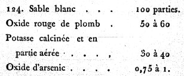
FIGURE XIII
(§ 124)La pesanteur de l'eau étant représentée par 10, celle de ce cristal se trouve de 28 à 30. Si l'on décompose ce verre , on en retire 28 à 29 pour cent de plomb réduit.
- Compositions de cristal, pour un four alimenté avec de la houille et à pots couverts.
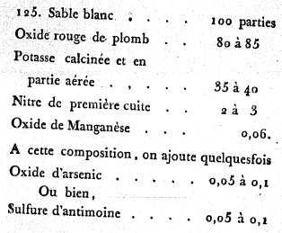
FIGURE XIV
(§ 125)La pesanteur de ce verre est de 32, la même que celle du cristal ou flint glass anglais. Si l'on décompose ce verre, on en retire 34 à 35 pour cent de plomb réduit.
126. On obtient encore la même pesanteur spécifique et la même quantité de plomb réduit que dans la composition précédente, si l'on met à fondre le mélange suivant :
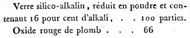
FIGURE XV
(§ 126)Mais cette composition est d'un affinage plus long et moins parfait que la précédente ; on est obligé d'y ajouter 8 à 10 parties d'alkali fixe. Ainsi, la dépense est plus grande que dans le cas précédent. [il est bien évident que plus la pesanteur spécifique du verre est importante, plus on se rapproche de la Pierre. Notez cependant qu'il ne s'agit là que de procédés spagyriques, comme on l'a bien noté au Mercure.]
127. Les compositions des articles 124 et 126 sont celles que l'on emploie pour les beaux ouvrages de gobeleterie, les lustres, les objectifs de lunettes achromatiques ; mais, si l'on veut imiter les pierres précieuses naturelles, comme le diamant et les autres pierres, soit blanches, soit colorées, qui jettent beaucoup de feu, le cristal qui en fait la base doit jouir de la propriété de décomposer la lumière avec beaucoup plus de force que les précédents. Or, l'on sait que la dispersion de la lumière augmente à raison de la pesanteur du cristal. On a donc cherché à produire un verre qui égalât ou surpassât même ces pierres naturelles en pesanteur. Celle de l'eau étant toujours exprimée par 10, la pesanteur du diamant blanc oriental est de 35 ; celle du rubis oriental est de 42. Ce sont les termes auxquels il a fallu s'élever par l'augmentation de l'oxyde de plomb, afin d'imiter la pesanteur et d'approcher, autant que possible, de la vertu réfringente de ces belles productions naturelles. On y est parvenu par les compositions suivantes, qui ne son d'usage qu'en petites masses pour des bijoux, des pendeloques, etc., et non pour les travaux journaliers en grand.
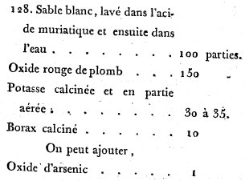
FIGURE XVI
(§ 128)La pesanteur de ce verre est de 35 a 36, comme celle du diamant. [voici donc, exposée au § 128, une composition classique de spagyrie. Notez qu'avant le XIXe siècle, on disposait de potasse rouge, qui devait être convertie en potasse blanche. La potasse tirée des cendres de chêne doit attirer l'attention car elle évoque cette remarque de Nicolas Flamel, dans ses Figures Hiéroglyphiques à propos « du vieux chêne creux » - cava ilex - et ses commentaires sur la constitution du vaisseau qui doit être tourné en « quarré » avec des douves provenant de chêne. Voyez Introïtus, VI pour le chêne. Voyez encore les chênes de l'oracle de Dodonne, qui bruissaient par des dispositifs en airain installés sur leurs branches ou encore le bois du bâteau ARGOS, fait des chênes du sanctuaire de Dodonne. Il y a là des indications importantes.]
- Compositions propres à recevoir des couleurs :
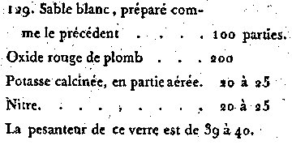
FIGURE XVII
(§ 129)- Autres :
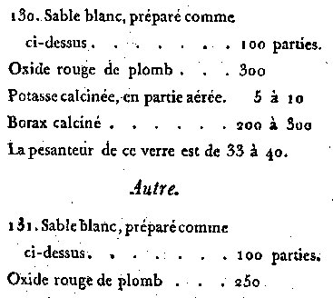
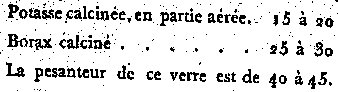
FIGURE XVIII à XIX
(§ 130, 131)Toutes ces compositions sont très fondantes ; elles n'exigent qu'un feu médiocre, mais longtemps continué (2 à 3 jours) pour achever l'oxydation, la dépuration du verre et la dissipation de l'alkali surabondant.
De la pesanteur spécifique du verre.
132. Les résultats précédents font suffisamment voir combien il peut se trouver de différence dans la pesanteur spécifique de diverses espèces
de verre. On a souvent besoin de déterminer la dose des matières premières d'une composition, de manière à obtenir plus ou moins de pesanteur dans le verre. Cette connaissance est utile, soit qu'on veuille préparer des cristaux pour les objectifs des lunettes achromatiques, parce qu'on sait que la dispersion de la lumière croît avec la pesanteur du verre, soit qu'on veuille imiter les pierres précieuses naturelles dans leur couleur, leur pesanteur et leur force de décomposition de la lumière ; elle évite des tâtonnements longs et dispendieux ; mais avant d'établir les règles qui peuvent y conduire, il est bon d'examiner les changements que l'action du feu occasionne sur les substances qui entrent dans la composition des matières vitrifiables séparément, ou par leur combinaison entr'elles.
Les phénomènes que présentent les vitrifications du plomb sont propres à jeter un grand jour sur cette matière.
133. L'oxygène est l'intermède qui sert à combiner le plomb avec la silice ou les autres terres dans la vitrification ; mais on n'a pas fait jusqu'ici assez d'attention à ce qui se passe dans cette opération. On sait en général que 100 parties d'oxyde rouge de plomb peuvent en fournir 89 de ce métal réduit, d'où l'on a conclu que ces 100 parties étaient composées de 89 de métal et de 11 d'oxygène. Il faut observer que l'oxyde de plomb a la faculté, comme plusieurs autres substances, et notamment la chaux et l'alkali fixe, de se charger d'acide carbonique après l'oxydation du plomb ; et en effet, les 100 parties d'oxyde rouge de plomb ordinaire en contiennent 3 de cet acide, qui disparaissent dans la vitrification.
Si l'on met dans un creuset d'argile 100 parties de minium ordinaire à une température de 3 à 400 degrés, (la moitié à peu près de celle des petits fours de verrerie), ces 100 parties en perdent 3 et se réduisent à 97 de litharge parfaitement fondue et liquide comme de l'eau. Tant que la vitrification n'a pas lieu, les choses restent dans cet état. Si l'on continue l'action du feu, on aperçoit distinctement le commencement de la vitrification ; elle s'annonce par des bulles qui partent des parois du creuset, et par des nuages qui se répandent dans toute la litharge. C'est la dissolution de la matière propre du creuset par l'oxyde de plomb en fusion. [ces nuages et ces bulles sont évoquées dans quelques textes, notamment l'Hermès Dévoilé de Cyliani. Le creuset qui est attaqué est figuré par l'allégorie du pélican ou celui du cygne qui meurt de ses propres plumes] En laissant ainsi continuer l'opération seulement jusqu'à ce que la litharge ait pris assez de terre pour se convertir en verre, on obtient une masse entièrement transparente après le refroidissement, et l'on trouve, en ayant égard au poids primitif du creuset, qu'en effet, malgré la dissipation des bulles, les 97 parties de litharge n'ont pas diminué ; on trouve même communément une petite augmentation. De ce fait bien constant, on pourrait conclure avec assurance que les 89 parties de plomb qui se trouvent dans ce verre restent combinées, au moins avec les 8 d'oxygène que contenait le minium.
En passant ainsi de l'état de métal jusqu'à celui de verre, le plomb augmente continuellement de poids absolu ; mais sa pesanteur spécifique va continuellement en diminuant. En effet, si l'on représente par 100 la pesanteur de l'eau, celle du plomb le sera par 1155, celle de la litharge précédente refroidie, par...825. Et enfin, celle du verre obtenu ci-dessus, recuit et refroidi, par...727. Ce verre est le plus pesant que j'aie pu obtenir par la vitrification de l'oxyde de plomb seul dans un creuset d'argile ; mais on voit qu'il est composé de plomb, d'oxygène, de silice et d'alumine, [ce sont des matières de base qui ont servi à Edmond Frémy et M. Feil pour préparer du rubis artificiel. Il ne manque que l'agent de minéralisation, représenté par le spath fluor et des conditions particulières de température. Rappelons que là encore, les expériences de Frémy et Feil se situent aux confins de la spagyrie car la nature n'a pu employer ces éléments pour produire les concrétions cristallines] et jusqu'ici il est incertain que l'on puisse obtenir un verre de plomb transparent par la combinaison seule du plomb avec l'oxygène. Tout annonce qu'il lui faut une base terreuse pour déterminer la vitrification, et l'amener à la transparence. C'est dans cette vue que j'ai fait l'expérience suivante dans le laboratoire, et avec un creuset de platine du citoyen d'Arcet.
134. 100 parties de minium mises dans ce creuset ont été exposées au feu du fourneau de coupelle, sous la moufle. Elles sont parvenues par la fusion à l'état de litharge, et se sont réduites à 97 comme dans mes creusets d'argile. Le tout ainsi fondu et très liquide a été pesé de temps à autre. On n'a observé aucun changement ultérieur dans ce poids, qui s'est toujours conservé le même pendant plus d'une demi-heure, et sans que cette action, continuée d'un feu actif, ait pu convertir la litharge en verre. On a ajouté 16 parties de sable quartzeux blanc et calciné. La dissolution s'est faite promptement, et l'on a obtenu 113 deux tiers, ou à très peu près 114 parties de verre. Ainsi, il y a eu une augmentation de près d'une partie sur les 97 de litharge et les 16 de sable. Ce verre n'était pas homogène : la pesanteur spécifique d'un morceau non recuit s'est trouvée de 704. Ce verre se trouve ainsi composé de plomb, de silice et d'oxygène ; et l'on voit que la combinaison de la silice a été nécessaire pour déterminer le passage à la vitrification.
135. Si l'on considérait la litharge obtenue comme un simple alliage de 89 parties de plomb et 8 d'oxygène, de manière que son volume fût égal
à la somme des volumes du plomb et de l'oxygène, on trouverait, par la règle d'alliage ordinaire, que les pesanteurs du plomb et de la litharge, étant respectivement représentées par les nombres 1135 et 825, celle de l'oxygène, dans cet état concret, serait de 218, en supposant toujours celle de l'eau égale à 100 ; c'est-à-dire, que l'oxygène dans la litharge occuperait un volume environ deux mille fois plus petit que dans son état de gaz, à la température de l'atmosphère, où il est fondu par le calorique et combiné avec lui ; mais on sait que dans ces dissolutions réciproques, le volume du composé est toujours plus petit que la somme de ceux des composants ; et, d'ailleurs, chacune des parties constituantes qui a subi l'action du feu, conserve toujours une portion de calorique combiné, plus ou moins grande, qui en augmente le volume.136. Les phénomènes de la vitrification du plomb étaient propres à faire voir comment l'oxygène est l'intermède qui sert à combiner le métal avec la silice, pour parvenir à la vitrification. Tout doit faire également présumer qu'une portion de calorique reste combinée dans le verre. Ce qui se passe dans la vitrification du sable par l'alkali fixe, peut jeter un nouveau jour sur cette question. Tout le monde sait que le carbonate de chaux calciné par l'action du feu perd son acide ; que si l'on éteint la chaux dans l'obscurité, il s'en dégage du calorique et de la lumière. L'alkali fixe, privé d'acide carbonique par une longue fusion au feu, opère également un dégagement considérable de calorique par sa solution dans l'eau. La même chose arrive quand on fait fondre dans l'eau de la liqueur des cailloux. Si l'on réduit en poudre un verre parfaitement transparent, dans la combinaison duquel sur 100 parties il en reste 55 de silice et 45 d'alkali, qu'on le fasse fondre dans l'eau, un thermomètre placé dans la liqueur annonce également un dégagement de calorique ; dans tous ces cas, le dégagement de calorique prouve qu'il était retenu dans la combinaison, et qu'il y avait été porté par l'action du feu, tandis qu'une autre portion avait été employée à dégager l'acide carbonique concret et à le convertir en fluide élastique. Il résulte donc de tous ces phénomènes sur la vitrification que, si l'oxygène et le calorique sont parties constituantes du verre, l'acide carbonique en est exclus, au moins dans les verres métalliques et alkalins.
137. Lorsqu'on fait du verre avec du sable et de l'alkali fixe, la quantité de silice combinée dans le verre, est d'autant plus grande, et la quantité d'alkali restante d'autant plus petite, que le degré de feu a été plus fort, en supposant toutefois qu'on ait laissé le verre assez de temps au feu pour dissiper tout l'alkali surabondant à la saturation réciproque due à ces deux substances.
Le verre fait à un grand degré de feu, est plus léger que celui qui est fait à une température plus basse. Le premier contient plus de silice et moins d'alkali que le second ; en sorte que la pesanteur spécifique du verre augmente avec la dose d'alkali de la combinaison. Il ne fallait rien moins qu'une suite constante d'expériences pour arriver à cette conséquence : en effet, on sait que le sable tombe au fond de l'alkali en fusion. La pesanteur de l'eau étant toujours exprimée par 100, celle du quartz et du sable qui en provient, est de 263 ; celle de la soude privée d'acide carbonique et fondue au feu de verrerie (environ 800 degrés) est de 199 ; celle du même sel refroidi et concret, de 222.D'après ce simple aperçu, on aurait pu être tenté de conclure que la pesanteur du verre, considéré comme un alliage de sable et d'alkali, aurait diminué à mesure que la dose de silice diminue, et que la dose d'alkali augmente ; mais on se serait étrangement trompé. Tous ces rapports sont changés par la combinaison de ces deux substances au feu. Le sable est composé de silice et d'une autre substance, jusqu'ici d'une nature inconnue, qui s'en dégage, avec effervescence, en fluide élastique par l'action de l'alkali ; celui-ci se combine avec la silice pour former ensemble le verre. Nous ignorons jusqu'à quel point le calorique, qui se joint à ce composé, s'y combine et adhère plus ou moins fort à l'une ou à l'autre de ces substances, dans leur pénétration ; mais il suffit de connaître les résultats de plusieurs combinaisons semblables, pour éviter toute erreur.
138. Si l'on détermine avec soin les doses de silice et d'alkali qui composent des verres formés de ces substances, à divers degrés de feu, et leurs pesanteurs spécifiques, on s'aperçoit que les différences entre les doses d'alkali sont sensiblement proportionnelles aux différences des pesanteurs spécifiques. Connaissant donc ces rapports pour deux verres particuliers, on sera à même d'en conclure la dose d'alkali d'un troisième par sa pesanteur spécifique, ou réciproquement, la pesanteur par la dose d'alkali.
Par expérience sur des verres faits avec de l'alkali, de la soude et du sable d'Aumont prés Senlis, on a eu les résultats suivants, la pesanteur de l'eau étant exprimée par 100.
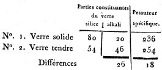
FIGURE XX
(différence de pesanteur de deux verres,
relativement à la silice et à l'alkali)Supposons que l'on demande quelles sont les doses de silice et d'alkali d'un autre verre n°3, de même espèce, et dont la pesanteur soit de 242 ; on le trouvera par la proportion suivante :
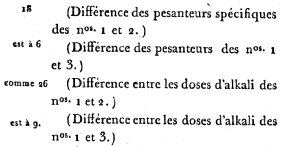
FIGURE XXI
(application à la composition du verre n°3)Ajoutant ces 9 aux 20 d'alkali du n°1, le total sera 29, d'où l'on concluera que ce verre est composé de 29 d'alkali et de 71 de silice. L'expérience sur ce verre a donné environ 30 d'alkali et 70 de silice.
139. Quand on a ainsi, dans une manufacture, deux résultats bien connus, pour servir de termes de comparaison, la simple détermination des pesanteurs spécifiques suffit pour apercevoir s'il est survenu quelque changement dans la fabrication, et en rechercher la cause. S'il entre de la chaux dans la composition, ce qui est le cas du verre ordinaire, la pesanteur augmente rapidement ; mais dans ce cas, comme dans le précédent, il est utile de déterminer de temps à autre la pesanteur du verre fabriqué, en prenant pour terme de comparaison celle du verre de la fabrique, quand elle est bien dirigée. Si l'on voit que la pesanteur augmente, on peut en conclure ou qu'il est entré plus de chaux qu'à l'ordinaire dans la composition, ou bien que le feu n'a pas été assez actif, et qu'il est reste trop d'alkali dans la combinaison du verre.
140. La règle de l'article 138 s'applique également aux verres pesants composés de silice et d'oxyde de plomb. Les différences entre les pesanteurs sont aussi proportionnelles aux différences entre les quantités d'oxyde.
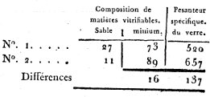
FIGURE XXII
(différence de pesanteur de deux verres,
relativement à la silice et au minium)Si l'on demande quelle sera la pesanteur du verre d'une composition n°3, de 20 de sable et 80 de minium.
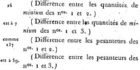
FIGURE XXIII
(application à la pesanteur du verre n°3)Ajoutant ces 59 à la pesanteur 520 du n°1, on aura 579 pour la pesanteur du verre de la composition n°3. Ces résultats ne sont pas rigoureux comme les premiers entre le sable et l'alkali, parce qu'ici on n'a point décomposé le verre pour s'assurer des proportions de ses parties constituantes en plomb, silice et oxygène, auxquelles se joignent d'autres portions de silice et d'alumine, provenant de la dégradation des creusets d'argile, toujours fortement attaqués par le verre de plomb ; mais ils sont suffisants dans la pratique pour obtenir, à très peu près, la pesanteur que l'on cherche.
141. Au surplus, cette règle peut s'appliquer fréquemment, et avec utilité, dans beaucoup d'autres cas de dissolutions ou de combinaisons
réciproques, notamment aux lessives alkalines pour lesquelles elle est d'une grande exactitude.Application à l'alkali de la soude, fondu au feu de verrerie et privé d'acide carbonique , autant que cette opération le permet, et ensuite dissout dans l'eau.
On suppose, pour plus d'exactitude, la pesanteur de l'eau égale à 1,000.
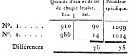
FIGURE XXIV
(application à l'alkali de la soude)Si l'on demande qu'elle est la quantité d'eau et de sel d'une autre lessive du même sel, dont la pesanteur est 1,060, on trouvera que sur 1,000 parties il y en a 50 de sel et 950 d'eau. Cette méthode peut être d'un usage fréquent pour déterminer par la simple pesanteur spécifique d'une lessive la quantité de sel que 100 parties de soude ou de cendres contiennent.
142. Les diverses compositions de cristal que nous avons données, (art. 124 et suivants) font voir que dans les travaux en grand, on emploie à la fois l'oxyde de plomb, le sable, l'alkali, etc. Dans tous ces cas, il est bon de prévoir qu'elle sera à peu près la pesanteur du verre qui résultera de ces compositions. La méthode à employer pour y parvenir est fondée sur les considérations suivantes :
143. La fabrication du cristal exige moins de feu que celle du verre ordinaire, les compositions de cristal contenant toujours beaucoup de
fondants pour le sable. La température des fours à cristaux est ordinairement telle que le verre d'alkali et de sable qui en résulte, en se saturant réciproquement, contient environ 75 parties de silice et 25 d'alkali, et donne lieu à une pesanteur d'environ 24, celle de l'eau étant exprimée par 10.144. Au même feu, 73 parties de minium sont saturées par 37 de sable, donnant lieu à une pesanteur de 52 ; et, dans la pratique, je suppose 75 parties de minium pour 25 de sable qui donnent lieu à une pesanteur d'environ 54.
145. D'un autre côté, si l'on fait fondre ensemble deux verres, déjà préparés d'avance, l'un composé de silice et d'alkali, l'autre composé de silice et d'oxyde de plomb, dont on aura déterminé les pesanteurs, le verre, ou plutôt l'alliage résultant des deux premiers, aura une pesanteur qui s'écartera peu de celle qu'on calculerait par la règle d'alliage ordinaire. Cela posé, il faut concevoir le sable de la composition, partagé en deux portions, l'une propre à saturer le minium dont on déterminera la quantité par l'article 144. Le poids du verre qui en résultera sera égal au poids du sable, plus au poids du minium, diminué de 3 pour cent. L'autre portion de sable se chargera de l'alkali nécessaire à sa saturation, dont la quantité est déterminée par l'article 143 ; le surplus de l'alkali disparaît et se dissipe pendant la vitrification. La quantité et la pesanteur de ces deux verres étant connues, on parviendra à connaître la pesanteur de leur alliage.
Application à la composition du cristal de l'article 124.
146. La composition étant de 100 parties de sable , 50 de minium et 40 de potasse, j'établis le type du calcul ainsi qu'il suit :
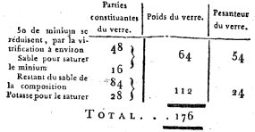
FIGURE XXV
(composition du cristal)- 1°. Je multiplie 54 par 24, et le produit par 176 ; j'obtiens ainsi un 1er nombre (A) égal à...228096
- 2°. Je multiplie 64 par 24 ; j'obtiens un 2ème nombre (B) égal à...1536
- 3°. Je multiplie 112 par 54 ; j'obtiens un 3ème nombre (C) égal à...6048.
- 4°. Ajoutant (B) et (C), le total (D) est...7584
- 5°. Divisant A par D, on a 30 au quotient ;C'est la pesanteur cherchée du verre provenant de la composition. Voyez, pour le calcul, la note VI. Les résultats que l'on obtient par le calcul indiquent toujours une pesanteur un peu plus grande que celle du verre provenant de la fabrication. La différence est d'autant plus sensible qu'il entre plus de minium dans la composition ; la raison en est que la matière du creuset se trouve plus attaquée par les compositions où l'oxyde de plomb abonde que par celles ou il y en a peu, ce qui ajoute toujours une nouvelle quantité de verre léger. Au reste, la méthode précédente n'en est pas moins utile pour éviter de longs tâtonnements. La table VI contient la pesanteur spécifique de quelques matières vitrifiables et de plusieurs verres.
De la pesanteur spécifique de quelques matières vitrifiables et de plusieurs verres, en supposant la pesanteur de l'eau égale a 100 [les nombres se rapportent à la pesanteur spécifique]
Quartz blanc demi-transparent et sable cristallisé___ 258 à 265
Vitrifications au feu de verrerie ordinaire.
Verre fait avec le quartz et l'alkali fixe__ 236 à 238
Demi-vitrification opaque faite avec la chaux et l'alkali__300
Verre fait avec 100 parties de quartz, 8 de chaux vive, contenues dans 12 de carbonate de chaux et d'alkali fixe (art. 86)__242 à 243
Verre fait avec parties égales de quartz et de cendres des meilleures soudes d'Alicante (art. 89)__252 à 253
Verre à vitres commun (art. 92)__268 à 270
Verre à bouteilles (art. 93)__264
Verre à bouteilles (art. 94)__273
Verre fait vec l'alumine et l'alkali fixe__270
Verre fait avec de l'argile contenant 62 pour cent de quartz, 38 d'alumine, et d'alkali fixe__250
Basalte d'Ecosse__273
Verre fait avec le basalte d'Ecosse pur__281
Verre fait avec de l'oxyde de manganèse pur__327
Vitrifications au feu propre à la fabrication du cristal
Litharge ou oxyde de plomb fondu__825
Verre de plomb provenant de la fusion du minium avec le moins de quartz possible pour déterminer la vitrification__730
Cristal fait avec 100 parties de quartz, 50 à 60 de minium et de la potasse (art. 124)__ 280 à 300
Cristal fait avec 100 parties de quartz, 80 à 35 de minium et de la potasse (art. 125)__320 à 330
Verre de borax__260
Cristal fait avec 100 parties de quartz, 150 de minium, 10 de borax et de la potasse (art. 128)__350 à 360
Verre fait avec 100 parties de quartz, 200 de minium et de la potasse (art. 129)__380 à 400
Verre d'antimoine contenant le moins possible de silice et d'alumine par son action sur un creuset d'argile__490 à 495
On ne traitera dans cet article que des verres colorés par la vitrification ordinaire, et non ces verres de couleur peints à chaud.
147. A la renaissance des arts en Europe, les verres de couleur furent très recherchés ; on les employa de préférence à l'ornement des temples. Le jeu de la lumière qui les traversait, inspirait à la fois l'admiration, le respect et le recueillement. Leur usage rétabli avec le goût qui caractérise notre siècle, peut s'appliquer avantageusement à nos édifices publics ou particuliers, et à l'embellissement de nos fêtes. On peut en faire une application utile aux fanaux pour des signaux de nuit. Les verres de couleur servent encore à imiter les pierres précieuses naturelles, de manière à produire une illusion complète à la vue simple ; il ne leur manque en effet que la dureté pour s'y méprendre. [c'est ici, sans doute, que se place le début de l'Art sacré qui devait dériver en deux chemins : l'un, positif, traitant de la préparation des pierres gemmes et l'autre, fabuleux, traitant des transmutations métalliques.]
148. Quand on a pour objet de faire des verres de couleurs pour des vitres ou des vases, les oxydes métalliques destinés à ce genre de fabrication, s'emploient avec les compositions de verres légers blancs (art. 86, 87, 90) ; si ce sont des verres destinés à imiter les pierres précieuses, on se sert des compositions de cristal des articles 124, 125, 128, 129, 130 et 131, suivant la pesanteur des pierres. Dans tous les cas, l'intensité de couleur dépend non seulement de la dose d'oxyde, mais encore de l'épaisseur du verre. On ne peut donc établir de règles invariables : c'est à l'artiste à choisir, dans chaque cas, la dose qui lui convient pour remplir son objet. Néanmoins, pour donner quelques exemples, je supposerai une épaisseur, pour les verres ordinaires, d'environ 2 millimètres (1 ligne) comme pour les verres à vitres de moyenne grandeur, dits verres façon de Bohême, sauf à diminuer la dose d'oxyde à mesure que l'épaisseur du verre augmente.
149. Les oxydes métalliques sont les substances que l'on emploie pour colorer le verre. Les nuances qu'ils y portent dépendent souvent de leur degré d'oxydation, comme on le remarque plus particulièrement dans les oxydes de fer. C'est pour cela qu'on ne se sert que des oxydes qui produisent des couleurs simples, vives et du même ton, chacun séparément, sauf à nuancer ces couleurs et en obtenir d'intermédiaires ou de composées par le mélange de plusieurs oxydes à la fois dans la composition des matières vitrifiables. [le lecteur aura compris que nous Loysel aborde la question du Soufre rouge, principe tinctorial, encore appelé Âme.]
- Le rouge s'obtient par l'oxyde d'or préparé convenablement avec l'étain, en y joignant le plus souvent de l'oxyde de manganèse. [cf. voie humide sur les dissolutions auriques et le pourpre de Cassius]
- Le jaune, par l'oxyde d'argent ou celui d'antimoine, et le plus souvent par l'un et l'autre à la fois.
- Le bleu, par l'oxyde de cobalt.
- Le vert, par un mélange d'oxydes d'argent et de cobalt, ou bien d'antimoine et de cobalt, couleur qui devient ainsi composée du jaune et
du bleu. On obtient aussi des verts avec les oxydes de fer et de cuivre, soit seuls, soit avec l'antimoine et le cobalt. [Marc-Antoine Gaudin - cf. Soufre - a pu dire que le cuivre était un vrai caméléon puisqu'on pouvait lui faire prendre toutes sortes de variétés de couleur.]
- Le violet, avec l'oxyde de manganèse.Ce n'est pas qu'on ne puisse obtenir quelques-unes de ces couleurs avec d'autres préparations. Ainsi, par exemple, on fait un très beau bleu
avec un autre oxyde que celui de cobalt, ce qui est contraire à l'opinion commune. Cette découverte est due au citoyen Darcet, qui me l'a
communiquée, et dont j'ai fait utilement un fréquent usage [Loysel ne dit pas de quelle nature est cet oxyde...] ; mais les oxydes précédents sont suffisants pour porter toutes les couleurs désirables dans le verre. Les verres ainsi colorés ne donnent passage qu'aux rayons de lumière qui nous les font paraître de telle ou telle couleur. Pour qu'ils produisent l'effet optique que l'on se propose, il faut qu'ils soient interposés entre l'œil et la lumière qui doit les traverser, et non pas qu'ils la réfléchissent. Ainsi, des carreaux de vitre rouges ou violets, quand ils sont vus en dedans d'un édifice, peuvent paraître bruns ou presque noirs, vus par réflexion ou en dehors.Pour les verres à vitres et les vases.
150. On peut employer, pour les verres à vitres et les vases, les compositions des articles 86, 87 et 90 ; mais de la composition de l'article 90, on supprime l'oxyde d'arsenic ; on diminue la dose de potasse de six parties, et l'on ajoute dans tous les cas :
Nitre...10 parties.
Oxyde d'or (précipité de Cassius)...2 à 10
Sulfure d'antimoine...2 à 10
Oxyde de manganèse...2 à 10Voyez la note 7.
Pour imiter les pierres précieuses.
151. De la composition n.° 128, on retranche l'arsenic et l'on ajoute :
Nitre...10 parties.
Précipité de Cassius...3 à 15
Sulfure d'antimoine...3 à 15
Oxyde de manganèse...3 à 15On pourrait également employer la composition n° 129.
Les oxydes métalliques, les plus avantageusement employés pour teindre le verre en jaune, sont ceux d'argent et d'antimoine ; le premier pour imiter les pierres précieuses ; le second, pour le même objet et pour les vases et les vitres.
Pour les verres à vitres et les vases avec l'oxyde d'argent.
152. Aux compositions des articles 86, 87 ou 90, on ajoute :
Muriate d'argent...5 à 10 parties.
Voyez la note 8.
Aux compositions 86, 87 ou 90, on ajoute:
Verre d'antimoine...2 à 4 parties.
Les couleurs précédentes sont fixes au feu ; mais, par économie, lorsqu'on n'a besoin de faire que quelques vases non assortis, tels que des flacons, des salières, etc., on se contente quelquefois dans certaines verreries, d'ajouter aux compositions de verre blanc ci-dessus.
153.
Tartre rouge et brut, tel qu'on le retire des tonneaux de vin rouge, en les grattant...9 à 10.
Charbon de bois d'aulne ou de bouleau, un quart à un tiers.Dans ce cas, il faut éviter d'employer, dans les compositions, soit des oxydes de manganèse et d'arsenic, soit du nitre, qui affaibliraient ou pourraient entièrement faire disparaître la couleur jaune.
Pour imiter les pierres précieuses.
154. Aux compositions 128 et 129, on ajoute:
Muriate d'argent...10 à 15.
Ou bien verre d'antimoine...4 à 8.155. Le bleu s'obtient avec l'oxyde de cobalt.
Pour les verres à vitres et les vases :
Aux compositions 86, 87 ou 90, on ajoute :
Oxyde de cobalt...1 à 2.
Pour imiter les pierres précieuses.
156. Aux compositions 125, 128 et 129, on ajoute :
Oxyde de cobalt...2 à 4
Pour les verres à vitres et les vases.
157. Aux compositions 86, 87 ou 90, on ajoute :
Verre d'antimoine...3 à 6.
Oxyde de cobalt...½ à 1158. Aux compositions 124 et 125, on ajoute :
Verre d'antimoine...4 à 8.
Oxyde de cobalt...deux tiers à 1 un tiers.Pour les verres à vitres et les vases:
159. Aux compositions 86, 87 ou 90, on ajoute :
Oxyde de manganèse...3 à 6
160. Aux compositions 124, 125, 128 ou 129, on ajoute :
Oxyde de manganèse...4 à 12
Précipité de Cassius...un vingtième à un sixième.161. Aux compositions 86, 87 ou 90, on ajoute :
Muriate d'argent...1
Phosphate calcaire (os calcinés, et de préférence ceux de mouton)...4 à 6162. Aux compositions 86, 87 ou 90, on ajoute :
Oxyde d'étain...100
163. Aux compositions 86, 87 ou 90, on ajoute :
Oxyde de cobalt...10
Oxyde de manganèse...10
Acétate de fer...10
¯
164. Les bâtons étant des parallélipipédes rectangles de 6 lignes de face (0,014 m) rompus par un bras de levier de 18 lignes de longueur, (0,041 m), on trouvera, par la méthode suivante, la ténacité pour chaque ligne quarrée (0,002 m) du plan de rupture, si le bâton était tiré dans sa longueur, au lieu d'être rompu à l'aide d'un bras de levier.
- Soit t la ténacité par unité quarré du plan de rupture ;
- c le côté de ce plan ou du parallélipipéde ;
- b le bras de levier, au bout duquel le poids est suspendu ;
- P le poids qui fait équilibre à toutes les résistances et qui opère la rupture ;
- c2 sera la surface du plan de rupture ;
- c2t la somme de toutes les ténacités de ce plan, et qui agit par un bras de levier c/2
- ct/2 sera la résistance que tous ces efforts opposent à la rupture.D'un autre côté, P est le poids seulement suffisant pour vaincre cette résistance, et b son bras de levier. On a donc c3t/2 = Pb, et par
conséquent t = 2Pb/c3.Dans le cas des bâtons précédens, c = 6 lignes et b = 18 lignes, ce qui donne t = P/6
C'est par cette formule qu'on a calculé les nombres de la dernière colonne de la table 1.
165. Pour ramener ces quantités à une échelle connue, il suffit de déterminer la ténacité de bâtons semblables desséchés à des températures mesurées immédiatement par le moyen d'un thermomètre. C'est ce qui a été exécuté soit dans des étuves, soit dans des bains de sable. Mettant à l'écart un assez grand nombre d'expériences, et ne faisant usage que de celles qui ont présenté le plus d'uniformité, on a obtenu les résultats suivants :
degrés mesurés au thermomètre de Réaumur poids de la rupture, exprimés en onces ou unités, dont chacune vaut 31 grammes 17 43 35 59 83 83 120 96 183 114 TABLEAU I Si l'on construit une ligne courbe (fig. 4), dont les abscises représentent les nombres de degrés précédens et les ordonnées représentent les
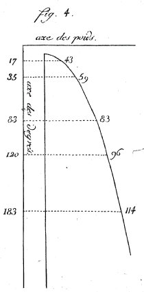
FIGURE XXVI
(axe des poids)poids, on s'aperçoit qu'elle se confond avec une parabole ordinaire. Si l'on appelle n le dombre de dégrés, et P le poids correspondant, on trouve que l'équation à la parabole qui satisfait aux résultats précédents est celle-ci :
(P - 25,58)2 = 45,21(n - 10,29).
Connaissant donc la valeur de P, on en conclura celle de n. C'est par ce moyen que j'ai obtenu les évaluations de la température de différents fourneaux. On les trouvera dans le tableau suivant. J'y ai ajouté celles que m'ont également fournies les pièces pyrométriques de M. Wedgvood.